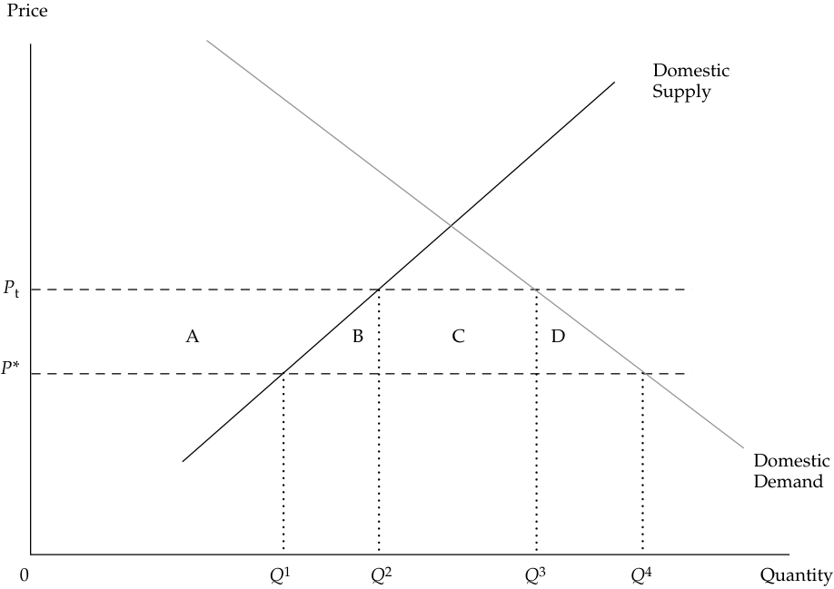

Learning Module 6 International Trade - Part 1: Introduction
Volume 2: Economics
Learning Module 6 International Trade
Part 1/2: Introduction (PDF Pages 203–218)
Tập 2: Kinh tế học (Volume 2: Economics)
Học phần 6: Thương mại Quốc tế (Learning Module 6: International Trade)
Phần 1/2: Giới thiệu (Introduction) (Trang PDF 203–218)
L E A R N I N G M O D U L E
H Ọ C P H Ầ N (L E A R N I N G M O D U L E)
6
6
International Trade
Thương mại Quốc tế (International Trade)
by Usha Nair-Reichert, PhD, and Daniel Robert Witschi, PhD, CFA.
Tác giả: Usha Nair-Reichert, PhD, và Daniel Robert Witschi, PhD, CFA.
Usha Nair-Reichert, PhD, is at Georgia Institute of Technology (USA). Daniel Robert Witschi, PhD, CFA (Switzerland).
Usha Nair-Reichert, PhD, làm việc tại Viện Công nghệ Georgia (Georgia Institute of Technology, Hoa Kỳ). Daniel Robert Witschi, PhD, CFA (Thụy Sĩ).
LEARNING OUTCOMES
MỤC TIÊU HỌC TẬP (LEARNING OUTCOMES)
| Mastery | The candidate should be able to: |
|---|---|
| describe the benefits and costs of international trade | |
| compare types of trade restrictions, such as tariffs, quotas, and export subsidies, and their economic implications |
|
| explain motivations for and advantages of trading blocs, common markets, and economic unions |
| Mức độ thành thạo (Mastery) | Ứng viên cần có khả năng (The candidate should be able to): |
|---|---|
| mô tả lợi ích và chi phí của thương mại quốc tế (international trade) | |
| so sánh các loại hình hạn chế thương mại (trade restrictions), chẳng hạn như thuế quan (tariffs), hạn ngạch (quotas) và trợ cấp xuất khẩu (export subsidies), cũng như các hàm ý kinh tế của chúng | |
| giải thích động cơ và lợi thế của các khối thương mại (trading blocs), thị trường chung (common markets) và liên minh kinh tế (economic unions) |
INTRODUCTION
GIỚI THIỆU (INTRODUCTION)
1
1
From an investment perspective, it is important for global investors to understand existing trade policies. Such policies can affect the volume and value of trade and thus can affect the return on investment. Investors need to be aware of potential changes in the government’s trade policy. Such changes have important implications for firm profitability and growth by affecting the demand for its products and its pricing. There has been much debate among economists on the role of trade and trade policy and its impact on the overall economy. This learning module examines the benefits and cost of international trade. It then describes trade restrictions and their implications and discusses the motivation for, and advantages of, the different types of trading blocs or trade agreements.
Từ góc độ đầu tư, điều quan trọng đối với các nhà đầu tư toàn cầu là phải hiểu rõ các chính sách thương mại hiện hành. Những chính sách như vậy có thể ảnh hưởng đến khối lượng và giá trị thương mại và do đó có thể ảnh hưởng đến tỷ suất sinh lợi trên vốn đầu tư (return on investment). Các nhà đầu tư cần nhận thức được những thay đổi tiềm tàng trong chính sách thương mại của chính phủ. Những thay đổi như vậy có hàm ý quan trọng đối với khả năng sinh lời và sự tăng trưởng của doanh nghiệp thông qua việc tác động đến nhu cầu đối với sản phẩm và chính sách định giá của doanh nghiệp đó. Đã có rất nhiều cuộc tranh luận giữa các nhà kinh tế học về vai trò của thương mại và chính sách thương mại cũng như tác động của chúng đối với nền kinh tế tổng thể. Học phần này xem xét những lợi ích và chi phí của thương mại quốc tế. Sau đó, học phần mô tả các hạn chế thương mại cùng những hàm ý của chúng, đồng thời thảo luận về động cơ và lợi thế của các loại hình khối thương mại hoặc hiệp định thương mại khác nhau.
LEARNING MODULE OVERVIEW
TỔNG QUAN HỌC PHẦN (LEARNING MODULE OVERVIEW)
-
The most compelling arguments supporting international trade are:
-
countries gain from exchange and specialization,
-
● industries experience greater economies of scale,
-
households and firms have greater product variety,
-
Những lập luận thuyết phục nhất ủng hộ thương mại quốc tế là:
-
các quốc gia thu được lợi ích từ trao đổi và chuyên môn hóa (gains from exchange and specialization),
-
các ngành công nghiệp đạt được lợi thế kinh tế theo quy mô (economies of scale) lớn hơn,
-
các hộ gia đình và doanh nghiệp có sự đa dạng sản phẩm (product variety) phong phú hơn,
-
competition is increased, and
-
resources are allocated more efficiently.
-
Newer models of trade focus on the gains from trade that result from economies of scale, greater product variety, and increased competition.
-
Opponents of free trade point to the potential for greater income inequality and the loss of jobs in developed market countries as a result of import competition.
-
The fact that trade increases overall welfare does not mean that every individual consumer and producer is better off. What it does mean is that the winners could, in theory, compensate the losers and still be better off.
-
Trade restrictions (or trade protection) are government policies that limit the ability of domestic households and firms to trade freely with other countries.
-
Tariffs are taxes that a government levies on imported goods. The primary objective of tariffs is to protect domestic industries that produce the same or similar goods. They also may aim to reduce a trade deficit.
-
The net welfare effect of tariffs is the sum of consumer surplus, producer surplus and government tax revenue. The loss in consumer surplus is greater than the sum of the gain in producer surplus and government revenue and results in a deadweight loss to the country’s welfare.
-
A quota restricts the quantity of a good that can be imported into a country, generally for a specified period of time. A voluntary export restraint (VER) is a trade barrier under which the exporting country agrees to limit its exports of the good to its trading partners to a specific number of units.
-
An export subsidy is a payment by the government to a firm for each unit of a good that is exported. Its goal is to stimulate exports.
-
A regional trading bloc is a group of countries that have signed an agreement to reduce and progressively eliminate barriers to trade and the movement of factors of production among the members of the bloc.
-
There are many different types of regional trading blocs, depending on the level of integration that takes place. These include free trade areas, customs union, common market, and economic union.
-
Trade creation occurs when regional integration results in the replacement of higher-cost domestic production by lower-cost imports from other members. Trade diversion occurs when lower-cost imports from non-member countries are replaced with higher-cost imports from members.
-
sự cạnh tranh được tăng cường, và
-
các nguồn lực được phân bổ hiệu quả hơn.
-
Các mô hình thương mại mới hơn tập trung vào những lợi ích từ thương mại bắt nguồn từ lợi thế kinh tế theo quy mô, sự đa dạng sản phẩm lớn hơn và sự cạnh tranh gia tăng.
-
Những người phản đối thương mại tự do (free trade) chỉ ra nguy cơ dẫn đến bất bình đẳng thu nhập lớn hơn và tình trạng mất việc làm tại các quốc gia có thị trường phát triển do sự cạnh tranh từ hàng nhập khẩu (import competition).
-
Thực tế là thương mại làm tăng phúc lợi tổng thể (overall welfare) không có nghĩa là từng người tiêu dùng và nhà sản xuất cá nhân đều khấm khá hơn. Điều đó có nghĩa là những người thắng cuộc, về mặt lý thuyết, có thể đền bù cho những người thua cuộc mà vẫn có lợi hơn trước.
-
Các hạn chế thương mại (trade restrictions hay bảo hộ mậu dịch – trade protection) là các chính sách của chính phủ nhằm giới hạn khả năng của các hộ gia đình và doanh nghiệp trong nước trong việc tự do giao thương với các quốc gia khác.
-
Thuế quan (Tariffs) là các loại thuế mà chính phủ đánh vào hàng hóa nhập khẩu. Mục tiêu chính của thuế quan là bảo vệ các ngành công nghiệp trong nước sản xuất các mặt hàng giống hệt hoặc tương tự. Chúng cũng có thể nhằm mục đích giảm thâm hụt thương mại (trade deficit).
-
Tác động phúc lợi ròng (net welfare effect) của thuế quan là tổng của sự thay đổi trong thặng dư tiêu dùng (consumer surplus), thặng dư sản xuất (producer surplus) và doanh thu thuế của chính phủ (government tax revenue). Phần tổn thất trong thặng dư tiêu dùng lớn hơn tổng phần tăng thêm của thặng dư sản xuất và doanh thu chính phủ, dẫn đến một khoản tổn thất vô ích / mất trắng (deadweight loss) đối với phúc lợi của quốc gia.
-
Hạn ngạch (Quota) hạn chế số lượng một mặt hàng có thể được nhập khẩu vào một quốc gia, thường là trong một khoảng thời gian xác định. Hạn chế xuất khẩu tự nguyện (Voluntary export restraint – VER) là một rào cản thương mại theo đó quốc gia xuất khẩu đồng ý giới hạn lượng xuất khẩu mặt hàng đó sang các đối tác thương mại của mình ở một số lượng đơn vị cụ thể.
-
Trợ cấp xuất khẩu (Export subsidy) là khoản thanh toán của chính phủ cho một doanh nghiệp tính trên mỗi đơn vị hàng hóa được xuất khẩu. Mục tiêu của nó là kích thích xuất khẩu.
-
Một khối thương mại khu vực (regional trading bloc) là một nhóm các quốc gia đã ký kết một hiệp định nhằm cắt giảm và tiến tới xóa bỏ dần các rào cản đối với thương mại và sự di chuyển của các yếu tố sản xuất giữa các thành viên trong khối.
-
Có nhiều loại khối thương mại khu vực khác nhau, tùy thuộc vào mức độ hội nhập diễn ra. Các loại hình này bao gồm khu vực mậu dịch tự do (free trade area), liên minh thuế quan (customs union), thị trường chung (common market) và liên minh kinh tế (economic union).
-
Tạo lập thương mại (Trade creation) xảy ra khi sự hội nhập khu vực dẫn đến việc thay thế hoạt động sản xuất trong nước có chi phí cao hơn bằng hàng nhập khẩu có chi phí thấp hơn từ các thành viên khác. Chuyển hướng thương mại (Trade diversion) xảy ra khi hàng nhập khẩu có chi phí thấp hơn từ các quốc gia không phải là thành viên bị thay thế bằng hàng nhập khẩu có chi phí cao hơn từ các quốc gia thành viên.
BENEFITS AND COSTS OF TRADE
LỢI ÍCH VÀ CHI PHÍ CỦA THƯƠNG MẠI (BENEFITS AND COSTS OF TRADE)
Over the past few decades, the global economy has experienced rapid growth in trade and a growing interdependence among countries. This has led to a debate among policy makers over whether the expansion of trade has been helpful for individual national economies. This lesson examines the possible benefits and costs of international trade.
Trong vài thập kỷ qua, nền kinh tế toàn cầu đã chứng kiến sự tăng trưởng nhanh chóng về thương mại và sự phụ thuộc lẫn nhau ngày càng lớn giữa các quốc gia. Điều này đã dẫn đến một cuộc tranh luận giữa các nhà hoạch định chính sách về việc liệu sự mở rộng thương mại có hữu ích cho từng nền kinh tế quốc gia riêng lẻ hay không. Bài học này xem xét những lợi ích và chi phí có thể có của thương mại quốc tế.
Benefits and Costs of International Trade
Lợi ích và Chi phí của Thương mại Quốc tế (Benefits and Costs of International Trade)
The benefits and costs of international trade are widely debated. The most compelling arguments supporting international trade are as follows: countries gain from exchange and specialization, industries experience greater economies of scale, households and firms have greater product variety, competition is increased, and resources are allocated more efficiently.
Lợi ích và chi phí của thương mại quốc tế là chủ đề được tranh luận rộng rãi. Những lập luận thuyết phục nhất ủng hộ thương mại quốc tế như sau: các quốc gia thu được lợi ích từ trao đổi và chuyên môn hóa, các ngành công nghiệp đạt được lợi thế kinh tế theo quy mô lớn hơn, các hộ gia đình và doanh nghiệp có sự đa dạng sản phẩm phong phú hơn, sự cạnh tranh được tăng cường và các nguồn lực được phân bổ hiệu quả hơn.
Gains from exchange occur when trade enables each country to receive a higher price for its exports (and greater profit) or pay a lower price for imported goods instead of producing these goods domestically at a higher cost (i.e., less efficiently). This exchange, in turn, leads to a more efficient allocation of resources by increasing production of the export good and reducing production of the import good in each country (trading partner). This efficiency allows for consumption of a larger bundle of goods, thus increasing overall welfare. The fact that trade increases overall welfare does not mean, of course, that every individual consumer and producer is better off. What it does mean is that the winners could, in theory, compensate the losers and still be better off.
Lợi ích từ trao đổi (Gains from exchange) xảy ra khi thương mại cho phép mỗi quốc gia nhận được mức giá cao hơn cho hàng xuất khẩu của mình (và thu được lợi nhuận lớn hơn) hoặc trả mức giá thấp hơn cho hàng hóa nhập khẩu thay vì tự sản xuất những hàng hóa này ở trong nước với chi phí cao hơn (tức là kém hiệu quả hơn). Sự trao đổi này, đến lượt nó, dẫn đến việc phân bổ các nguồn lực hiệu quả hơn bằng cách tăng sản lượng hàng hóa xuất khẩu và giảm sản lượng hàng hóa cạnh tranh nhập khẩu ở mỗi quốc gia (đối tác thương mại). Tính hiệu quả này cho phép tiêu dùng một giỏ hàng hóa lớn hơn, qua đó làm tăng phúc lợi tổng thể. Tất nhiên, thực tế là thương mại làm tăng phúc lợi tổng thể không có nghĩa là từng người tiêu dùng và nhà sản xuất cá nhân đều khấm khá hơn. Điều đó có nghĩa là những người thắng cuộc, về mặt lý thuyết, có thể đền bù cho những người thua cuộc mà vẫn có lợi hơn trước.
Trade also leads to greater efficiency by fostering specialization based on comparative advantage. Traditional trade models, such as the Ricardian model and the Heckscher–Ohlin model, focus on specialization and trade according to comparative advantage arising from differences in technology and factor endowments, respectively.
Thương mại cũng dẫn đến tính hiệu quả cao hơn bằng cách thúc đẩy sự chuyên môn hóa dựa trên lợi thế so sánh (comparative advantage). Các mô hình thương mại truyền thống, chẳng hạn như mô hình Ricardo (Ricardian model) và mô hình Heckscher–Ohlin (Heckscher–Ohlin model), tập trung vào việc chuyên môn hóa và giao thương theo lợi thế so sánh phát sinh lần lượt từ sự khác biệt về công nghệ và các yếu tố nguồn lực sẵn có (factor endowments).
Newer models of trade focus on the gains from trade that result from economies of scale, greater product variety, and increased competition. In an open economy, increased competition from foreign firms reduces the monopoly power of domestic firms and forces them to become more efficient, in contrast to a closed economy. Industries that exhibit increasing returns to scale (e.g., the automobile and steel industries) benefit from increased market size as a country starts trading because the average cost of production declines as output increases in these industries. Monopolistically competitive models of trade have been used to explain why there is significant two-way trade (known as intra-industry trade ) between countries within the same industry. Intra-industry trade occurs when a country exports and imports goods in the same product category or classification.
Các mô hình thương mại mới hơn tập trung vào những lợi ích từ thương mại bắt nguồn từ lợi thế kinh tế theo quy mô (economies of scale), sự đa dạng sản phẩm lớn hơn và sự cạnh tranh gia tăng. Trong một nền kinh tế mở (open economy), sự cạnh tranh gia tăng từ các doanh nghiệp nước ngoài làm giảm sức mạnh độc quyền của các doanh nghiệp trong nước và buộc họ phải trở nên hiệu quả hơn, trái ngược với một nền kinh tế đóng (closed economy). Các ngành công nghiệp thể hiện hiệu suất tăng dần theo quy mô (increasing returns to scale, ví dụ: ngành công nghiệp ô tô và ngành thép) được hưởng lợi từ quy mô thị trường mở rộng khi một quốc gia bắt đầu giao thương vì chi phí sản xuất trung bình giảm xuống khi sản lượng tăng lên trong các ngành này. Các mô hình thương mại cạnh tranh độc quyền (monopolistically competitive models of trade) đã được sử dụng để giải thích tại sao lại có hoạt động thương mại hai chiều đáng kể (được gọi là thương mại nội ngành – intra-industry trade) giữa các quốc gia trong cùng một ngành công nghiệp. Thương mại nội ngành xảy ra khi một quốc gia vừa xuất khẩu vừa nhập khẩu các hàng hóa thuộc cùng một danh mục hoặc phân loại sản phẩm.
A monopolistically competitive industry has many firms; each firm produces a unique or differentiated product: it does not have any exit or entry barriers, and long-run economic profits are zero. In such a model, even though countries may be similar, they gain from trade because each country focuses on the production and export of one or more varieties of the good and imports other varieties of the good. For example, the European Union exports and imports different types of cars. Consumers gain from having access to a greater variety of final goods. Firms benefit from greater economies of scale because firms both within and outside the EU are able to sell their goods in both markets. Hence, scale economies allow firms to benefit from the larger market size and experience lower average cost of production as a result of trade.
Một ngành cạnh tranh độc quyền có nhiều doanh nghiệp; mỗi doanh nghiệp sản xuất một sản phẩm độc đáo hoặc có sự khác biệt hóa (differentiated product): ngành này không có bất kỳ rào cản gia nhập hay rút lui nào, và lợi nhuận kinh tế trong dài hạn bằng không. Trong một mô hình như vậy, ngay cả khi các quốc gia có thể tương đồng nhau, họ vẫn thu được lợi ích từ thương mại vì mỗi quốc gia tập trung vào việc sản xuất và xuất khẩu một hoặc nhiều chủng loại của mặt hàng đó và nhập khẩu các chủng loại khác của mặt hàng đó. Ví dụ, Liên minh Châu Âu vừa xuất khẩu vừa nhập khẩu các dòng xe hơi khác nhau. Người tiêu dùng được hưởng lợi từ việc có khả năng tiếp cận sự đa dạng phong phú hơn của các hàng hóa cuối cùng. Các doanh nghiệp được hưởng lợi từ lợi thế kinh tế theo quy mô lớn hơn vì các doanh nghiệp ở cả bên trong và bên ngoài EU đều có thể bán hàng hóa của mình ở cả hai thị trường. Do đó, lợi thế kinh tế theo quy mô cho phép các doanh nghiệp hưởng lợi từ quy mô thị trường lớn hơn và đạt được chi phí sản xuất trung bình thấp hơn nhờ có thương mại.
Research suggests that trade liberalization can lead to increased real (i.e., inflation-adjusted) GDP although the strength of this relationship is still debated. The positive influence of trade on GDP can arise from more efficient allocation of resources, learning by doing, higher productivity, knowledge spillovers, and trade-induced changes in policies and institutions that affect the incentives for innovation. In industries that embrace “learning by doing,” such as the semiconductor industry, the cost of production per unit declines as output increases because of expertise and experience
Các nghiên cứu chỉ ra rằng tự do hóa thương mại (trade liberalization) có thể dẫn đến sự gia tăng GDP thực (tức GDP đã điều chỉnh theo lạm phát), mặc dù mức độ mạnh mẽ của mối quan hệ này vẫn còn đang được tranh luận. Ảnh hưởng tích cực của thương mại đối với GDP có thể phát sinh từ việc phân bổ nguồn lực hiệu quả hơn, học hỏi qua thực hành (learning by doing), năng suất cao hơn, hiệu ứng lan tỏa tri thức (knowledge spillovers), và những thay đổi do thương mại thúc đẩy trong các chính sách và định chế có ảnh hưởng đến động lực đổi mới sáng tạo. Trong các ngành công nghiệp đề cao việc “học hỏi qua thực hành”, chẳng hạn như ngành công nghiệp bán dẫn, chi phí sản xuất trên mỗi đơn vị sản phẩm giảm xuống khi sản lượng tăng lên nhờ chuyên môn và kinh nghiệm
acquired in the process of production. Trade can lead to increased exchange of ideas, freer flow of technical expertise, and greater awareness of changing consumer tastes and preferences in global markets. It also can contribute to the development of higher quality and more effective institutions and policies that encourage domestic innovation. For example, studies have shown that foreign research and development (R&D) has beneficial effects on domestic productivity, which become stronger the more open an economy is to foreign trade. For example, some estimate that about a quarter of the benefits of R&D investment in a G–7 country accrues to their trading partners. Consider Logitech, a Swiss company that manufactures computer mice. To win original equipment manufacturer (OEM) contracts from IBM and Apple, Logitech needed to develop innovative designs and provide high-volume production at a low cost. So in the late 1980s, the company moved to Taiwan Region, which had a highly qualified labor force, competent parts suppliers, a rapidly expanding local computer industry, and offered Logitech space in a science park at a competitive rate. Soon thereafter, Logitech was able to secure the Apple contract.
tích lũy được trong quá trình sản xuất. Thương mại có thể dẫn đến sự trao đổi ý tưởng gia tăng, dòng chảy chuyên môn kỹ thuật tự do hơn và nhận thức sâu sắc hơn về thị hiếu cũng như sở thích đang thay đổi của người tiêu dùng trên các thị trường toàn cầu. Nó cũng có thể đóng góp vào sự phát triển của các định chế và chính sách có chất lượng cao hơn và hiệu quả hơn nhằm khuyến khích sự đổi mới sáng tạo trong nước. Ví dụ, các nghiên cứu đã chỉ ra rằng hoạt động nghiên cứu và phát triển (R&D) của nước ngoài có những tác động tích cực đến năng suất trong nước, và tác động này càng trở nên mạnh mẽ hơn khi nền kinh tế càng mở cửa hơn đối với ngoại thương. Chẳng hạn, một số ước tính cho thấy khoảng một phần tư lợi ích từ đầu tư R&D tại một quốc gia thuộc nhóm G–7 được lan tỏa sang các đối tác thương mại của họ. Hãy xem xét Logitech, một công ty Thụy Sĩ chuyên sản xuất chuột máy tính. Để giành được các hợp đồng nhà sản xuất thiết bị gốc (original equipment manufacturer – OEM) từ IBM và Apple, Logitech cần phải phát triển các thiết kế sáng tạo và cung cấp sản lượng lớn với chi phí thấp. Vì vậy, vào cuối những năm 1980, công ty đã chuyển đến Khu vực Đài Loan, nơi có lực lượng lao động trình độ cao, các nhà cung cấp linh kiện có năng lực, ngành công nghiệp máy tính địa phương đang mở rộng nhanh chóng, và cung cấp cho Logitech không gian trong một khu công viên khoa học với mức giá cạnh tranh. Ngay sau đó, Logitech đã có thể giành được hợp đồng từ Apple.
Opponents of free trade point to the potential for greater income inequality and the loss of jobs in developed countries as a result of import competition. As a country moves toward free trade, adjustments will be made in domestic industries that are exporters as well as in those that face import competition. Resources (investments) may need to be reallocated into or out of an industry depending on whether that industry is expanding (exporters) or contracting (i.e., facing import competition). As a result of this adjustment process, less-efficient firms may be forced to exit the industry, which, in turn, may lead to higher unemployment and the need for displaced workers to be retrained for jobs in expanding industries. The counter argument is that although there may be short-term and even some medium-term costs, these resources are likely to be more effectively (re-)employed in other industries in the long run. Nonetheless, the adjustment process is virtually certain to impose costs on some groups of stakeholders.
Những người phản đối thương mại tự do chỉ ra nguy cơ dẫn đến bất bình đẳng thu nhập lớn hơn và tình trạng mất việc làm tại các nước phát triển do sự cạnh tranh từ hàng nhập khẩu. Khi một quốc gia tiến tới thương mại tự do, những sự điều chỉnh sẽ diễn ra ở các ngành công nghiệp xuất khẩu trong nước cũng như ở những ngành phải đối mặt với sự cạnh tranh từ hàng nhập khẩu. Các nguồn lực (vốn đầu tư) có thể cần phải được phân bổ lại vào hoặc rút ra khỏi một ngành công nghiệp tùy thuộc vào việc ngành đó đang mở rộng (các nhà xuất khẩu) hay đang thu hẹp (tức phải đối mặt với sự cạnh tranh từ hàng nhập khẩu). Hệ quả của quá trình điều chỉnh này là các doanh nghiệp kém hiệu quả hơn có thể buộc phải rời bỏ ngành, điều này đến lượt nó có thể dẫn đến tỷ lệ thất nghiệp cao hơn và nhu cầu phải đào tạo lại những người lao động bị mất việc để họ làm việc trong các ngành công nghiệp đang mở rộng. Lập luận phản biện lại là mặc dù có thể có những chi phí trong ngắn hạn và thậm chí một số chi phí trong trung hạn, nhưng những nguồn lực này nhiều khả năng sẽ được (tái) sử dụng một cách hiệu quả hơn trong các ngành công nghiệp khác về dài hạn. Tuy nhiên, quá trình điều chỉnh gần như chắc chắn sẽ áp đặt chi phí lên một số nhóm các bên liên quan (stakeholders).
QUESTION SET
BỘ CÂU HỎI (QUESTION SET)
Consider two countries that each produce two goods. Suppose the cost of producing cotton relative to lumber is lower in Cottonland than in Lumberland.
Hãy xem xét hai quốc gia mà mỗi nước đều sản xuất hai mặt hàng. Giả sử chi phí sản xuất bông (cotton) tương đối so với gỗ xẻ (lumber) ở Xứ Bông (Cottonland) là thấp hơn so với ở Xứ Gỗ (Lumberland).
- How would trade between the two countries affect the lumber industry in Lumberland?
- Thương mại giữa hai quốc gia sẽ ảnh hưởng như thế nào đến ngành công nghiệp gỗ xẻ ở Xứ Gỗ (Lumberland)?
Solution:
Lời giải (Solution):
The lumber industry in Lumberland would benefit from trade. Because the cost of producing lumber relative to producing cotton is lower in Lumberland than in Cottonland (i.e., lumber is relatively cheap in Lumberland), Lumberland will export lumber and the industry will expand.
Ngành công nghiệp gỗ xẻ ở Xứ Gỗ (Lumberland) sẽ được hưởng lợi từ thương mại. Bởi vì chi phí sản xuất gỗ xẻ tương đối so với sản xuất bông ở Xứ Gỗ là thấp hơn so với ở Xứ Bông (tức là gỗ xẻ tương đối rẻ ở Xứ Gỗ), nên Xứ Gỗ sẽ xuất khẩu gỗ xẻ và ngành công nghiệp này sẽ mở rộng.
- How would trade between the two countries affect the lumber industry in Cottonland?
- Thương mại giữa hai quốc gia sẽ ảnh hưởng như thế nào đến ngành công nghiệp gỗ xẻ ở Xứ Bông (Cottonland)?
Solution:
Lời giải (Solution):
The lumber industry in Cottonland would not benefit from trade, at least in the short run. Because lumber is relatively expensive to produce in Cottonland, the domestic lumber industry will shrink as lumber is imported from Lumberland.
Ngành công nghiệp gỗ xẻ ở Xứ Bông (Cottonland) sẽ không được hưởng lợi từ thương mại, ít nhất là trong ngắn hạn. Bởi vì việc sản xuất gỗ xẻ ở Xứ Bông tương đối đắt đỏ, ngành công nghiệp gỗ xẻ trong nước sẽ thu hẹp lại khi gỗ xẻ được nhập khẩu từ Xứ Gỗ.
-
What would happen to the lumber industry workers in Cottonland in the long run? Solution: The overall welfare effect in both countries is positive. However, in the short run, many lumber producers in Cottonland (and cotton producers in Lumberland) are likely to find themselves without jobs as the lumber industry in Cottonland and the cotton industry in Lumberland contract. Those with skills that also are needed in the other industry may find jobs fairly quickly. Others are likely to do so after some re-training. In the long run, displaced workers should be able to find jobs in the expanding export industry. Those who remain in the import-competing industry, however, may be permanently worse off because their industry-specific skills are now less valuable. Thus, even in the long run, trade does not necessarily make every stakeholder better off. But the winners could compensate the losers and still be better off, so the overall welfare effect of opening trade is positive.
-
What is the meaning of the expression “gains from trade”? Solution:
- Điều gì sẽ xảy ra với những người công nhân ngành gỗ xẻ ở Xứ Bông (Cottonland) trong dài hạn?
Lời giải (Solution):
Gains from trade imply that the overall benefits of trade outweigh the losses from trade. It does not mean that all stakeholders (producers, consumers, government) benefit (or benefit equally) from trade.
Tác động phúc lợi tổng thể ở cả hai quốc gia đều là tích cực. Tuy nhiên, trong ngắn hạn, nhiều nhà sản xuất gỗ xẻ ở Xứ Bông (và các nhà sản xuất bông ở Xứ Gỗ) nhiều khả năng sẽ thấy mình rơi vào cảnh mất việc làm khi ngành gỗ xẻ ở Xứ Bông và ngành bông ở Xứ Gỗ thu hẹp lại. Những người có kỹ năng vốn cũng cần thiết trong ngành công nghiệp kia có thể tìm được việc làm khá nhanh chóng. Những người khác nhiều khả năng sẽ tìm được việc sau khi trải qua một số chương trình đào tạo lại. Trong dài hạn, những người lao động bị mất việc sẽ có thể tìm được việc làm trong ngành công nghiệp xuất khẩu đang mở rộng. Tuy nhiên, những người vẫn trụ lại trong ngành công nghiệp cạnh tranh nhập khẩu có thể sẽ chịu thiệt thòi vĩnh viễn vì các kỹ năng đặc thù theo ngành của họ giờ đây đã kém giá trị hơn. Do đó, ngay cả trong dài hạn, thương mại không nhất thiết làm cho mọi bên liên quan đều khấm khá hơn. Nhưng những người thắng cuộc có thể đền bù cho những người thua cuộc mà vẫn có lợi hơn trước, vì vậy tác động phúc lợi tổng thể của việc mở cửa thương mại là tích cực.
- What are some of the benefits from trade?
- Ý nghĩa của cụm từ “lợi ích từ thương mại” (“gains from trade”) là gì?
Solution:
Lời giải (Solution):
Lợi ích từ thương mại hàm ý rằng tổng lợi ích thu được từ thương mại lớn hơn những tổn thất do thương mại gây ra. Nó không có nghĩa là tất cả các bên liên quan (nhà sản xuất, người tiêu dùng, chính phủ) đều được hưởng lợi (hoặc được hưởng lợi ngang nhau) từ thương mại.
Some of the benefits from trade include the following: gains from exchange and specialization based on relative cost advantage; gains from economies of scale as the companies add new markets for their products; greater variety of products available to households and firms; greater efficiency from increased competition; and more efficient allocation of resources.
- Một số lợi ích thu được từ thương mại là gì?
Lời giải (Solution):
TRADE RESTRICTIONS AND AGREEMENTS—TARIFFS, 3 QUOTAS, AND EXPORT SUBSIDIES
Một số lợi ích từ thương mại bao gồm: lợi ích từ trao đổi và chuyên môn hóa dựa trên lợi thế chi phí tương đối; lợi ích từ lợi thế kinh tế theo quy mô khi các công ty bổ sung thêm các thị trường mới cho sản phẩm của mình; sự đa dạng sản phẩm phong phú hơn sẵn có cho các hộ gia đình và doanh nghiệp; hiệu quả cao hơn nhờ sự cạnh tranh gia tăng; và sự phân bổ các nguồn lực hiệu quả hơn.
compare types of trade restrictions, such as tariffs, quotas, and export subsidies, and their economic implications
CÁC HẠN CHẾ VÀ HIỆP ĐỊNH THƯƠNG MẠI — THUẾ QUAN, 3 HẠN NGẠCH VÀ TRỢ CẤP XUẤT KHẨU (TRADE RESTRICTIONS AND AGREEMENTS—TARIFFS, QUOTAS, AND EXPORT SUBSIDIES)
Trade restrictions (or trade protection) are government policies that limit the ability of domestic households and firms to trade freely with other countries. Examples of trade restrictions include tariffs, import quotas, voluntary export restraints (VER), subsidies, embargoes, and domestic content requirements. Tariffs are taxes that a government levies on imported goods. Quotas restrict the quantity of a good that can be imported into a country, generally for a specified period of time. A voluntary export restraint is similar to a quota but is imposed by the exporting country. An export subsidy is paid by the government to the firm when it exports a unit of a good that is being subsidized. The goal is to promote exports, but it reduces welfare by encouraging production and trade that is inconsistent with comparative advantage. Domestic content provisions stipulate that some percentage of the value added or
so sánh các loại hình hạn chế thương mại, chẳng hạn như thuế quan, hạn ngạch và trợ cấp xuất khẩu, cũng như các hàm ý kinh tế của chúng (compare types of trade restrictions, such as tariffs, quotas, and export subsidies, and their economic implications)
Các hạn chế thương mại (Trade restrictions hay bảo hộ mậu dịch – trade protection) là các chính sách của chính phủ nhằm giới hạn khả năng của các hộ gia đình và doanh nghiệp trong nước trong việc tự do giao thương với các quốc gia khác. Ví dụ về các hạn chế thương mại bao gồm thuế quan, hạn ngạch nhập khẩu, hạn chế xuất khẩu tự nguyện (VER), trợ cấp, cấm vận (embargoes) và các yêu cầu về tỷ lệ nội địa hóa. Thuế quan (Tariffs) là các loại thuế mà chính phủ đánh vào hàng hóa nhập khẩu. Hạn ngạch (Quotas) hạn chế số lượng một mặt hàng có thể được nhập khẩu vào một quốc gia, thường là trong một khoảng thời gian xác định. Hạn chế xuất khẩu tự nguyện tương tự như hạn ngạch nhưng được áp đặt bởi quốc gia xuất khẩu. Trợ cấp xuất khẩu (Export subsidy) được chính phủ chi trả cho doanh nghiệp khi doanh nghiệp xuất khẩu một đơn vị hàng hóa thuộc diện được trợ cấp. Mục tiêu là thúc đẩy xuất khẩu, nhưng nó làm giảm phúc lợi do khuyến khích hoạt động sản xuất và thương mại không phù hợp với lợi thế so sánh. Các quy định về tỷ lệ nội địa hóa (Domestic content provisions) quy định rằng một tỷ lệ phần trăm nhất định của giá trị gia tăng hoặc
components used in production should be of domestic origin. Trade restrictions are imposed by countries for several reasons, including protecting established domestic industries from foreign competition, protecting new industries from foreign competition until they mature (infant industry argument), protecting and increasing domestic employment, protecting strategic industries for national security reasons, generating revenue from tariffs (especially for developing countries), and retaliation against trade restrictions imposed by other countries.
các linh kiện được sử dụng trong sản xuất phải có xuất xứ trong nước. Các hạn chế thương mại được các quốc gia áp đặt vì nhiều lý do, bao gồm bảo vệ các ngành công nghiệp trong nước đã hình thành trước sự cạnh tranh của nước ngoài, bảo vệ các ngành công nghiệp mới khỏi sự cạnh tranh của nước ngoài cho đến khi chúng trưởng thành (lập luận bảo hộ ngành công nghiệp non trẻ – infant industry argument), bảo vệ và gia tăng việc làm trong nước, bảo vệ các ngành công nghiệp chiến lược vì lý do an ninh quốc gia, tạo nguồn thu từ thuế quan (đặc biệt là đối với các nước đang phát triển), và trả đũa các hạn chế thương mại do các quốc gia khác áp đặt.
Capital restrictions are defined as controls placed on foreigners’ ability to own domestic assets or domestic residents’ ability to own foreign assets. Thus, in contrast with trade restrictions, which limit the openness of goods markets, capital restrictions limit the openness of financial markets and will be addressed later.
Các hạn chế về vốn (Capital restrictions) được định nghĩa là các biện pháp kiểm soát đặt ra đối với khả năng người nước ngoài sở hữu tài sản trong nước hoặc khả năng cư dân trong nước sở hữu tài sản nước ngoài. Như vậy, trái ngược với các hạn chế thương mại vốn giới hạn độ mở của thị trường hàng hóa, các hạn chế về vốn giới hạn độ mở của thị trường tài chính và sẽ được đề cập ở phần sau.
Tariffs
Thuế quan (Tariffs)
Tariffs are taxes that a government levies on imported goods. The primary objective of tariffs is to protect domestic industries that produce the same or similar goods. They also may aim to reduce a trade deficit. Tariffs reduce the demand for imported goods by increasing their price above the free trade price. The economic impact of a tariff on imports in a small country is illustrated in Exhibit 1. In this context, a small country is not necessarily small in size, population, or GDP. Instead, a small country is one that is a price taker in the world market for a product and cannot influence the world market price. For example, by many measures, Brazil is a large country, but it is a price taker in the world market for cars. A large country, however, is a large importer of the product and can exercise some influence on price in the world market. When a large country imposes a tariff, the exporter reduces the price of the good to retain some of the market share it could lose if it did not lower its price.
Thuế quan là các loại thuế mà chính phủ đánh vào hàng hóa nhập khẩu. Mục tiêu chính của thuế quan là bảo vệ các ngành công nghiệp trong nước sản xuất các mặt hàng giống hệt hoặc tương tự. Chúng cũng có thể nhằm mục đích giảm thâm hụt thương mại. Thuế quan làm giảm nhu cầu đối với hàng hóa nhập khẩu bằng cách đẩy giá của chúng lên cao hơn mức giá thương mại tự do (free trade price). Tác động kinh tế của thuế quan đánh vào hàng nhập khẩu tại một quốc gia nhỏ được minh họa trong Bảng minh họa 1 (Exhibit 1). Trong bối cảnh này, một quốc gia nhỏ không nhất thiết phải nhỏ về diện tích, dân số hay GDP. Thay vào đó, một quốc gia nhỏ (small country) là một quốc gia đóng vai trò là người chấp nhận giá (price taker) trên thị trường thế giới đối với một sản phẩm và không thể gây ảnh hưởng đến mức giá thị trường thế giới. Ví dụ, xét theo nhiều thước đo, Brazil là một quốc gia lớn, nhưng lại là người chấp nhận giá trên thị trường ô tô thế giới. Ngược lại, một quốc gia lớn (large country) là một nước nhập khẩu lớn đối với sản phẩm đó và có thể thực thi một mức độ ảnh hưởng nhất định lên giá cả trên thị trường thế giới. Khi một quốc gia lớn áp đặt thuế quan, nhà xuất khẩu nước ngoài phải giảm giá bán mặt hàng đó để giữ lại một phần thị phần mà họ có thể bị mất nếu không hạ giá.
This reduction in price alters the terms of trade and represents a redistribution of income from the exporting country to the importing country. So, in theory, it is possible for a large country to increase its welfare by imposing a tariff if (1) its trading partner does not retaliate and (2) the deadweight loss as a result of the tariff (see below) is smaller than the benefit of improving its terms of trade. Global welfare, however, would still experience a net reduction—the large country cannot gain by imposing a tariff unless it imposes an even larger loss on its trading partner.
Việc giảm giá này làm thay đổi tỷ lệ trao đổi thương mại (terms of trade) và thể hiện sự phân phối lại thu nhập từ quốc gia xuất khẩu sang quốc gia nhập khẩu. Vì vậy, về mặt lý thuyết, một quốc gia lớn có thể làm tăng phúc lợi của mình bằng cách áp đặt thuế quan nếu (1) đối tác thương mại của họ không trả đũa và (2) khoản tổn thất vô ích (deadweight loss) do thuế quan gây ra (xem bên dưới) nhỏ hơn lợi ích thu được từ việc cải thiện tỷ lệ trao đổi thương mại của nước đó. Tuy nhiên, phúc lợi toàn cầu vẫn sẽ chịu sự sụt giảm ròng — quốc gia lớn không thể thu được lợi ích bằng cách áp đặt thuế quan trừ khi họ gây ra một khoản tổn thất thậm chí còn lớn hơn cho đối tác thương mại của mình.
In Exhibit 1, the world price (free trade price) is P *. Under free trade, domestic supply is Q1 , domestic consumption is Q4 , and imports are Q1 Q4 . After the imposition of a per-unit tariff t , the domestic price increases to Pt, which is the sum of the world price and the per-unit tariff t . At the new domestic price, domestic production increases to Q2 and domestic consumption declines to Q3 , resulting in a reduction in imports to Q2 Q3 .
Trong Bảng minh họa 1, mức giá thế giới (giá thương mại tự do) là $P^*$. Trong điều kiện thương mại tự do, lượng cung trong nước là $Q_1$, lượng tiêu dùng trong nước là $Q_4$, và lượng nhập khẩu là $Q_1 Q_4$ (tức $Q_4 - Q_1$). Sau khi áp đặt mức thuế quan tính trên mỗi đơn vị sản phẩm là $t$, mức giá trong nước tăng lên thành $P^t$, bằng tổng của mức giá thế giới và mức thuế quan trên mỗi đơn vị $t$ ($P^t = P^* + t$). Tại mức giá trong nước mới này, sản lượng trong nước tăng lên thành $Q_2$ và lượng tiêu dùng trong nước giảm xuống còn $Q_3$, dẫn đến việc lượng nhập khẩu giảm xuống còn $Q_2 Q_3$ (tức $Q_3 - Q_2$).
Exhibit 1: Welfare Effects of Tariff and Import Quota
Bảng minh họa 1: Tác động Phúc lợi của Thuế quan và Hạn ngạch Nhập khẩu (Exhibit 1: Welfare Effects of Tariff and Import Quota)

Chú thích hình ảnh: - Trục tung: Giá (Price), với mức giá thương mại tự do thế giới $P^*$ và mức giá sau thuế quan/hạn ngạch $P^t$. - Trục hoành: Sản lượng (Quantity), với các mức sản lượng $Q_1, Q_2, Q_3, Q_4$. - Các đường biểu diễn: Đường Cung nội địa (Domestic Supply) dốc lên và Đường Cầu nội địa (Domestic Demand) dốc xuống. - Các vùng diện tích: $A$ (tăng thặng dư sản xuất), $B$ (tổn thất vô ích phía sản xuất), $C$ (doanh thu thuế quan hoặc tô hạn ngạch), $D$ (tổn thất vô ích phía tiêu dùng).
The welfare effects of the tariff can be summarized as follows:
Các tác động phúc lợi của thuế quan có thể được tóm tắt như sau:
-
Consumers suffer a loss of consumer surplus because of the increase in price. In Exhibit 1, this effect is represented by areas A + B + C + D.
-
Local producers gain producer surplus from a higher price for their output. This effect is represented by area A.
-
The government gains tariff revenue on imports Q2 Q3 . This effect is represented by area C.
-
Người tiêu dùng phải chịu sự sụt giảm thặng dư tiêu dùng (loss of consumer surplus) do mức giá tăng lên. Trong Bảng minh họa 1, tác động này được biểu diễn bằng diện tích các vùng $A + B + C + D$.
-
Các nhà sản xuất nội địa thu thêm được thặng dư sản xuất (producer surplus) nhờ mức giá bán cao hơn cho sản lượng đầu ra của mình. Tác động này được biểu diễn bằng diện tích vùng $A$.
-
Chính phủ thu được doanh thu thuế quan (tariff revenue) trên lượng hàng nhập khẩu $Q_2 Q_3$. Tác động này được biểu diễn bằng diện tích vùng $C$.
The net welfare effect is the sum of these three effects and is summarized in Exhibit 2. The loss in consumer surplus is greater than the sum of the gain in producer surplus and government revenue and results in a deadweight loss to the country’s welfare of B + D.
Tác động phúc lợi ròng là tổng của ba tác động này và được tóm tắt trong Bảng minh họa 2 (Exhibit 2). Phần tổn thất trong thặng dư tiêu dùng lớn hơn tổng phần tăng thêm của thặng dư sản xuất và doanh thu chính phủ, dẫn đến một khoản tổn thất vô ích (deadweight loss) đối với phúc lợi của quốc gia bằng $B + D$.
Exhibit 2: Welfare Effects of an Import Tariff or Quota
Bảng minh họa 2: Tác động Phúc lợi của Thuế quan hoặc Hạn ngạch Nhập khẩu (Exhibit 2: Welfare Effects of an Import Tariff or Quota)
| Importing Country | |
|---|---|
| Consumer surplus | – (A + B + C + D) |
| Producer surplus | +A |
| Tariff revenue_or_Quota rents | +C |
| f National welfare |
− B − D |
| Khoản mục | Quốc gia Nhập khẩu (Importing Country) |
|---|---|
| Thặng dư tiêu dùng (Consumer surplus) | $-(A + B + C + D)$ |
| Thặng dư sản xuất (Producer surplus) | $+A$ |
| Doanh thu thuế quan hoặc Tô hạn ngạch (Tariff revenue or Quota rents) | $+C$ |
| Phúc lợi quốc gia (National welfare) | $-B - D$ |
Tariffs create deadweight loss because they give rise to inefficiencies on both the consumption and production side. B represents inefficiencies in production. Instead of being able to import goods at the world price P *, tariffs encourage inefficient producers whose cost of production is greater than P * to enter (or remain in) the market, leading to an inefficient allocation of resources. On the consumption side, tariffs prevent mutually beneficial exchanges from occurring because consumers who were willing to pay more than P * but less than Pt are now unable to consume the good.
Thuế quan tạo ra tổn thất vô ích vì chúng làm phát sinh sự kém hiệu quả ở cả phía tiêu dùng lẫn phía sản xuất. Vùng $B$ thể hiện sự kém hiệu quả trong sản xuất. Thay vì có thể nhập khẩu hàng hóa ở mức giá thế giới $P^*$, thuế quan lại khuyến khích các nhà sản xuất kém hiệu quả có chi phí sản xuất lớn hơn $P^*$ gia nhập (hoặc trụ lại) thị trường, dẫn đến việc phân bổ các nguồn lực kém hiệu quả. Về phía tiêu dùng (vùng $D$), thuế quan ngăn cản các giao dịch trao đổi cùng có lợi diễn ra vì những người tiêu dùng vốn sẵn lòng trả mức giá cao hơn $P^*$ nhưng thấp hơn $P^t$ giờ đây không thể tiêu dùng mặt hàng đó nữa.
EXAMPLE 1
VÍ DỤ 1 (EXAMPLE 1)
Analysis of a Tariff
Phân tích một Khoản Thuế quan (Analysis of a Tariff)
South Africa manufactures 110,000 tons of paper. However, domestic demand for paper is 200,000 tons. The world price for paper is USD5.00 per ton. South Africa will import 90,000 tons of paper from the world market at free trade prices. If the South African government (a small country) decides to impose a tariff of 20 percent on paper imports, the price of imported paper will increase to USD6.00. Domestic production after the imposition of the tariff increases to 130,000 tons, while the quantity demanded declines to 170,000 tons.
Nam Phi sản xuất 110.000 tấn giấy. Tuy nhiên, nhu cầu giấy trong nước là 200.000 tấn. Mức giá thế giới đối với giấy là 5,00 USD mỗi tấn. Nam Phi sẽ nhập khẩu 90.000 tấn giấy từ thị trường thế giới ở mức giá thương mại tự do. Nếu chính phủ Nam Phi (một quốc gia nhỏ) quyết định áp đặt mức thuế quan 20% lên giấy nhập khẩu, giá giấy nhập khẩu sẽ tăng lên thành 6,00 USD. Sản lượng sản xuất trong nước sau khi áp đặt thuế quan tăng lên 130.000 tấn, trong khi lượng cầu giảm xuống còn 170.000 tấn.
- Calculate the loss in consumer surplus arising from the imposition of the tariff on imported paper.
- Hãy tính phần tổn thất trong thặng dư tiêu dùng phát sinh từ việc áp đặt thuế quan lên giấy nhập khẩu.
Solution:
Lời giải (Solution):
The loss in consumer surplus = USD1 × 170,000 + 1/2 × USD1 × 30,000 = USD185,000. This calculation is represented by areas A + B + C + D in Exhibit 1.
Phần tổn thất trong thặng dư tiêu dùng $= \text{USD } 1 \times 170.000 + \frac{1}{2} \times \text{USD } 1 \times 30.000 = \text{USD } 185.000$. Phép tính này được biểu diễn bởi diện tích các vùng $A + B + C + D$ trong Bảng minh họa 1.
- Calculate the gain in producer surplus arising from the imposition of the tariff.
- Hãy tính phần tăng thêm trong thặng dư sản xuất phát sinh từ việc áp đặt thuế quan.
Solution:
Lời giải (Solution):
Gain in producer surplus = USD1 × 110,000 + 1/2 × (USD1 × 20,000) = USD120,000; Area A in Exhibit 1.
Phần tăng thêm trong thặng dư sản xuất $= \text{USD } 1 \times 110.000 + \frac{1}{2} \times (\text{USD } 1 \times 20.000) = \text{USD } 120.000$; tương ứng với Vùng $A$ trong Bảng minh họa 1.
- Hãy tính phần tăng thêm trong doanh thu chính phủ phát sinh từ việc áp đặt thuế quan.
- Calculate the gain in government revenue arising from the imposition of the tariff.
Lời giải (Solution):
Solution:
Thay đổi trong doanh thu chính phủ $= \text{USD } 1 \times 40.000 = \text{USD } 40.000$; tương ứng với Vùng $C$ trong Bảng minh họa 1 (với lượng nhập khẩu mới là $170.000 - 130.000 = 40.000$ tấn).
Change in government revenue = USD1 × 40,000 = USD40,000; Area C in Exhibit 1.
- Hãy tính khoản tổn thất vô ích (deadweight loss) phát sinh từ việc áp đặt thuế quan.
- Calculate the deadweight loss arising from the imposition of the tariff.
- Solution:
Lời giải (Solution):
Deadweight loss because of the tariff = 1/2 × USD1 × 20,000 + 1/2 × USD1 × 30,000 = USD 25,000; Areas B + D in Exhibit 1.
Tổn thất vô ích do thuế quan $= \frac{1}{2} \times \text{USD } 1 \times 20.000 + \frac{1}{2} \times \text{USD } 1 \times 30.000 = \text{USD } 25.000$; tương ứng với các Vùng $B + D$ trong Bảng minh họa 1.
Quotas
Hạn ngạch (Quotas)
A quota restricts the quantity of a good that can be imported into a country, generally for a specified period of time. An import license specifies the quantity that can be imported. For example, the European Union operates a system of annual import quotas for steel producers who are not members of the World Trade Organization. A key difference between tariffs and quotas is that the government is able to collect the revenue generated from a tariff. This effect is uncertain under a quota. With quotas, foreign producers can often raise the price of their goods and earn greater profits than they would without the quota. These profits are called quota rents . In Exhibit 1, if the quota is Q2 Q3 , the equivalent tariff that will restrict imports to Q2 Q3 is t and the domestic price after the quota is Pt. This is the same as the domestic price after the tariff t was imposed. Area C, however, is now the quota rent or profits that are likely to be captured by the foreign producer rather than tariff revenue that is captured by the domestic government. If the foreign producer or foreign government captures the
Hạn ngạch (Quota) hạn chế số lượng một mặt hàng có thể được nhập khẩu vào một quốc gia, thường là trong một khoảng thời gian xác định. Một giấy phép nhập khẩu (import license) quy định cụ thể số lượng được phép nhập khẩu. Ví dụ, Liên minh Châu Âu vận hành một hệ thống hạn ngạch nhập khẩu hàng năm đối với các nhà sản xuất thép không phải là thành viên của Tổ chức Thương mại Thế giới. Một điểm khác biệt then chốt giữa thuế quan và hạn ngạch là chính phủ có thể thu được khoản doanh thu phát sinh từ thuế quan. Tác động này lại không chắc chắn dưới chế độ hạn ngạch. Với hạn ngạch, các nhà sản xuất nước ngoài thường có thể nâng giá bán hàng hóa của mình và kiếm được lợi nhuận lớn hơn so với khi không có hạn ngạch. Những khoản lợi nhuận tăng thêm này được gọi là tô hạn ngạch (quota rents). Trong Bảng minh họa 1, nếu hạn ngạch là $Q_2 Q_3$, thì mức thuế quan tương đương sẽ hạn chế lượng nhập khẩu ở mức $Q_2 Q_3$ là $t$ và mức giá trong nước sau khi áp hạn ngạch là $P^t$. Mức giá này giống hệt như mức giá trong nước sau khi áp đặt mức thuế quan $t$. Tuy nhiên, diện tích vùng $C$ giờ đây là khoản tô hạn ngạch hay lợi nhuận nhiều khả năng sẽ được thu giữ bởi nhà sản xuất nước ngoài thay vì là doanh thu thuế quan được thu bởi chính phủ trong nước. Nếu nhà sản xuất nước ngoài hoặc chính phủ nước ngoài thu giữ
quota rent, C, then the welfare loss to the importing country, represented by areas B + D + C in Exhibit 1, under a quota is greater than under the equivalent tariff. If the government of the country that imposes the quota can capture the quota rents by auctioning the import licenses for a fee, then the welfare loss under the quota is similar to that of a tariff, represented by areas B + D.
khoản tô hạn ngạch $C$, thì tổn thất phúc lợi đối với quốc gia nhập khẩu — được biểu diễn bằng các vùng $B + D + C$ trong Bảng minh họa 1 — dưới chế độ hạn ngạch sẽ lớn hơn so với dưới mức thuế quan tương đương. Nếu chính phủ của quốc gia áp đặt hạn ngạch có thể thu giữ khoản tô hạn ngạch này bằng cách bán đấu giá các giấy phép nhập khẩu để thu một khoản phí, thì tổn thất phúc lợi dưới chế độ hạn ngạch sẽ tương tự như của thuế quan, được biểu diễn bằng các vùng $B + D$.
A VER is a trade barrier under which the exporting country agrees to limit its exports of the good to its trading partners to a specific number of units. The main difference between an import quota and a VER is that the former is imposed by the importer, whereas the latter is imposed by the exporter. The VER allows the quota rent resulting from the decrease in trade to be captured by the exporter (or exporting country), whereas in the case of an import quota, there is ambiguity regarding who captures the quota rents. Hence, a VER results in welfare loss in the importing country. For example, in 1981, the Japanese government imposed VERs on automobile exports to the United States.
Hạn chế xuất khẩu tự nguyện (VER) là một rào cản thương mại theo đó quốc gia xuất khẩu đồng ý giới hạn lượng xuất khẩu mặt hàng đó sang các đối tác thương mại của mình ở một số lượng đơn vị cụ thể. Sự khác biệt chính giữa hạn ngạch nhập khẩu và VER là hạn ngạch nhập khẩu do nước nhập khẩu áp đặt, trong khi VER do nước xuất khẩu áp đặt. VER cho phép khoản tô hạn ngạch phát sinh từ sự sụt giảm thương mại được thu giữ hoàn toàn bởi nhà xuất khẩu (hoặc quốc gia xuất khẩu), trong khi ở trường hợp hạn ngạch nhập khẩu, vẫn có sự mơ hồ về việc ai là người thu giữ khoản tô hạn ngạch đó. Do đó, VER chắc chắn dẫn đến tổn thất phúc lợi lớn hơn tại quốc gia nhập khẩu (mất cả vùng $C$). Ví dụ, vào năm 1981, chính phủ Nhật Bản đã áp đặt VER đối với ô tô xuất khẩu sang Hoa Kỳ.
Export Subsidies
Trợ cấp Xuất khẩu (Export Subsidies)
An export subsidy is a payment by the government to a firm for each unit of a good that is exported. Its goal is to stimulate exports. But it interferes with the functioning of the free market and may distort trade away from comparative advantage. Hence, it reduces welfare. Countervailing duties are duties that are levied by the importing country against subsidized exports entering the country. As an example, agricultural subsidies in developed countries, notably the EU, have been a contentious issue in trade negotiations with emerging market countries and developed market countries that are agricultural exporters, such as New Zealand and Australia.
Trợ cấp xuất khẩu (Export subsidy) là khoản thanh toán của chính phủ cho một doanh nghiệp tính trên mỗi đơn vị hàng hóa được xuất khẩu. Mục tiêu của nó là kích thích xuất khẩu. Nhưng nó can thiệp vào sự vận hành của thị trường tự do và có thể làm bóp méo thương mại đi chệch khỏi lợi thế so sánh. Do đó, nó làm suy giảm phúc lợi. Thuế chống trợ cấp / thuế đối kháng (Countervailing duties) là các khoản thuế được quốc gia nhập khẩu đánh vào hàng xuất khẩu có trợ cấp khi đi vào lãnh thổ nước mình. Lấy ví dụ, các khoản trợ cấp nông nghiệp tại các nước phát triển, đáng chú ý là EU, đã trở thành một vấn đề gây tranh cãi gay gắt trong các cuộc đàm phán thương mại với các nước thị trường mới nổi và các nước thị trường phát triển chuyên xuất khẩu nông sản như New Zealand và Úc.
In the case of an export subsidy, the exporter has the incentive to shift sales from the domestic to the export market because it receives the international price plus the per-unit subsidy for each unit of the good exported. This scenario raises the price in the domestic market by the amount of the subsidy in the small country case (price before subsidy plus subsidy). In the large country case, the world price declines as the large country increases exports. The net welfare effect is negative in both the large and small country cases, with a larger decline in the large country case. In the large country case, the decline in world prices implies that a part of the subsidy is transferred to the foreign country, unlike in the small country case.
Trong trường hợp có trợ cấp xuất khẩu, nhà xuất khẩu có động lực chuyển hướng bán hàng từ thị trường trong nước sang thị trường xuất khẩu vì họ nhận được mức giá quốc tế cộng thêm khoản trợ cấp trên mỗi đơn vị cho từng đơn vị hàng hóa được xuất khẩu. Kịch bản này làm tăng mức giá tại thị trường trong nước thêm đúng bằng khoản trợ cấp trong trường hợp quốc gia nhỏ (giá trước trợ cấp cộng với mức trợ cấp). Trong trường hợp quốc gia lớn, mức giá thế giới sẽ giảm xuống khi quốc gia lớn gia tăng lượng xuất khẩu. Tác động phúc lợi ròng là âm (tiêu cực) ở cả trường hợp quốc gia lớn lẫn quốc gia nhỏ, với mức sụt giảm phúc lợi lớn hơn ở trường hợp quốc gia lớn. Trong trường hợp quốc gia lớn, sự sụt giảm của mức giá thế giới hàm ý rằng một phần của khoản trợ cấp đã được chuyển giao sang cho quốc gia nước ngoài (người tiêu dùng nước ngoài được mua hàng rẻ hơn), không giống như trong trường hợp quốc gia nhỏ.
Exhibit 3 summarizes some of these effects.
Bảng minh họa 3 (Exhibit 3) tóm tắt một số tác động này.
Exhibit 3: Summary of Some of the Effects of Trade Restrictions
Bảng minh họa 3: Tóm tắt Một số Tác động của các Hạn chế Thương mại (Exhibit 3: Summary of Some of the Effects of Trade Restrictions)
Panel A. Effects of Alternative Trade Policies
Bảng A. Tác động Phúc lợi của các Chính sách Thương mại Thay thế (Panel A. Effects of Alternative Trade Policies)
| Tariff | Import Quota | Export Subsidy | VER | |
|---|---|---|---|---|
| Impact on | Importing country | Importing country | Exporting country | Importing country |
| Producer surplus | Increases | Increases | Increases | Increases |
| Consumer surplus | Decreases | Decreases | Decreases | Decreases |
| Khoản mục | Thuế quan (Tariff) | Hạn ngạch Nhập khẩu (Import Quota) | Trợ cấp Xuất khẩu (Export Subsidy) | Hạn chế Xuất khẩu Tự nguyện (VER) |
|---|---|---|---|---|
| Đối tượng chịu tác động (Impact on) | Quốc gia nhập khẩu (Importing country) | Quốc gia nhập khẩu (Importing country) | Quốc gia xuất khẩu (Exporting country) | Quốc gia nhập khẩu (Importing country) |
| Thặng dư sản xuất (Producer surplus) | Tăng (Increases) | Tăng (Increases) | Tăng (Increases) | Tăng (Increases) |
| Thặng dư tiêu dùng (Consumer surplus) | Giảm (Decreases) | Giảm (Decreases) | Giảm (Decreases) | Giảm (Decreases) |
Panel A. Effects of Alternative Trade Policies
Bảng A (tiếp theo). Tác động Phúc lợi của các Chính sách Thương mại Thay thế (Panel A. Effects of Alternative Trade Policies)
| Tariff | Import Quota | Export Subsidy | VER | |
|---|---|---|---|---|
| Government revenue | Increases | Mixed (depends on whether the quota rents are captured by the importing country through sale of licenses or by the exporters) |
Falls (government spending rises) |
No change (rent to foreigners) |
| National welfare | Decreases in small country Could increase in large country |
Decreases in small country Could increase in large country |
Decreases | Decreases |
| Khoản mục | Thuế quan (Tariff) | Hạn ngạch Nhập khẩu (Import Quota) | Trợ cấp Xuất khẩu (Export Subsidy) | Hạn chế Xuất khẩu Tự nguyện (VER) |
|---|---|---|---|---|
| Doanh thu chính phủ (Government revenue) | Tăng (Increases) | Hỗn hợp / Không rõ ràng (phụ thuộc vào việc tô hạn ngạch được thu giữ bởi quốc gia nhập khẩu thông qua việc bán giấy phép hay bởi các nhà xuất khẩu) | Giảm (chi tiêu chính phủ tăng lên) | Không thay đổi (tô hạn ngạch rơi vào tay người nước ngoài) |
| Phúc lợi quốc gia (National welfare) | Giảm ở quốc gia nhỏ Có thể tăng ở quốc gia lớn |
Giảm ở quốc gia nhỏ Có thể tăng ở quốc gia lớn |
Giảm (Decreases) | Giảm (Decreases) |
Panel B. Effects of Alternative Trade Policies on Price, Production, Consumption, and Trade
Bảng B. Tác động của các Chính sách Thương mại Thay thế lên Giá cả, Sản xuất, Tiêu dùng và Thương mại (Panel B. Effects of Alternative Trade Policies on Price, Production, Consumption, and Trade)
| Tariff | Import Quota | Export Subsidy | VER | |
|---|---|---|---|---|
| Impact on | Importing country | Importing country | Exporting country | Importing country |
| Price | Increases | Increases | Increases | Increases |
| Domestic | Decreases | Decreases | Decreases | Decreases |
| consumption | ||||
| Domestic production | Increases | Increases | Increases | Increases |
| Trade | Imports decrease | Imports decrease | Exports increase | Imports decrease |
| Khoản mục | Thuế quan (Tariff) | Hạn ngạch Nhập khẩu (Import Quota) | Trợ cấp Xuất khẩu (Export Subsidy) | Hạn chế Xuất khẩu Tự nguyện (VER) |
|---|---|---|---|---|
| Đối tượng chịu tác động (Impact on) | Quốc gia nhập khẩu (Importing country) | Quốc gia nhập khẩu (Importing country) | Quốc gia xuất khẩu (Exporting country) | Quốc gia nhập khẩu (Importing country) |
| Giá nội địa (Price) | Tăng (Increases) | Tăng (Increases) | Tăng (Increases) | Tăng (Increases) |
| Tiêu dùng nội địa (Domestic consumption) | Giảm (Decreases) | Giảm (Decreases) | Giảm (Decreases) | Giảm (Decreases) |
| Sản xuất nội địa (Domestic production) | Tăng (Increases) | Tăng (Increases) | Tăng (Increases) | Tăng (Increases) |
| Thương mại (Trade) | Nhập khẩu giảm (Imports decrease) | Nhập khẩu giảm (Imports decrease) | Xuất khẩu tăng (Exports increase) | Nhập khẩu giảm (Imports decrease) |
EXAMPLE 2
VÍ DỤ 2 (EXAMPLE 2)
Analysis of Trade Restrictions
Phân tích các Hạn chế Thương mại (Analysis of Trade Restrictions)
Thailand, a small country, has to decide whether to impose a tariff or a quota on the import of computers. You are considering investing in a local firm that is a major importer of computers.
Thái Lan, một quốc gia nhỏ, phải quyết định xem nên áp đặt thuế quan hay hạn ngạch đối với việc nhập khẩu máy tính. Bạn đang cân nhắc đầu tư vào một doanh nghiệp địa phương vốn là nhà nhập khẩu máy tính lớn.
- What will be the impact of a tariff on prices, quantity produced, and quantity imported in Thailand (the importing country)?
- Tác động của thuế quan đối với giá cả, sản lượng sản xuất và sản lượng nhập khẩu tại Thái Lan (quốc gia nhập khẩu) sẽ là gì?
Lời giải (Solution):
Solution:
Thuế quan do một quốc gia nhỏ như Thái Lan áp đặt sẽ làm tăng giá máy tính tại quốc gia nhập khẩu, làm giảm sản lượng nhập khẩu và làm tăng sản lượng sản xuất trong nước.
A tariff imposed by a small country, such as Thailand, raises the price of computers in the importing country, reduces the quantity imported, and increases domestic production.
- Nếu Thái Lan áp đặt thuế quan, tác động đối với giá cả tại quốc gia xuất khẩu sẽ là gì?
- If Thailand imposes a tariff, what will the impact be on prices in the exporting country?
Lời giải (Solution):
Solution:
Thuế quan do một quốc gia nhỏ áp đặt sẽ không làm thay đổi giá máy tính tại quốc gia xuất khẩu (vì quốc gia nhỏ là người chấp nhận giá trên thị trường thế giới).
A tariff imposed by a small country would not change the price of computers in the exporting country.
- Thuế quan sẽ ảnh hưởng như thế nào đến thặng dư tiêu dùng, thặng dư sản xuất và doanh thu chính phủ tại Thái Lan?
- How would a tariff affect consumer surplus, producer surplus, and government revenue in Thailand? Solution:
Lời giải (Solution):
When a small country imposes a tariff, it reduces consumer surplus, increases producer surplus, and increases government revenue in that country.
Khi một quốc gia nhỏ áp đặt thuế quan, chính sách này sẽ làm giảm thặng dư tiêu dùng, làm tăng thặng dư sản xuất và làm tăng doanh thu của chính phủ tại quốc gia đó.
- Explain whether the net welfare effect of a tariff is the same as that of a quota.
- Hãy giải thích xem liệu tác động phúc lợi ròng của thuế quan có giống với tác động phúc lợi ròng của hạn ngạch hay không.
Solution:
Lời giải (Solution):
The quota can lead to a greater welfare loss than a tariff if the quota rents are captured by the foreign government or foreign firms.
Hạn ngạch có thể dẫn đến tổn thất phúc lợi lớn hơn so với thuế quan nếu khoản tô hạn ngạch (quota rents) bị thu giữ bởi chính phủ nước ngoài hoặc các doanh nghiệp nước ngoài.
- Which policy, a tariff or a quota, would be most beneficial to the local importer in which you may invest and why?
- Chính sách nào, thuế quan hay hạn ngạch, sẽ có lợi nhất cho nhà nhập khẩu địa phương mà bạn có thể đầu tư vào và tại sao?
Solution:
Lời giải (Solution):
A tariff will hurt importers because it will reduce their share of the computer market in Thailand. The impact of a quota depends on whether or not the importers can capture a share of the quota rents. Assuming importers can capture at least part of the rents, they will be better off with a quota.
Thuế quan sẽ gây thiệt hại cho các nhà nhập khẩu vì nó sẽ làm giảm thị phần của họ trên thị trường máy tính tại Thái Lan. Tác động của hạn ngạch phụ thuộc vào việc liệu các nhà nhập khẩu có thể thu giữ được một phần tô hạn ngạch hay không. Giả sử các nhà nhập khẩu được cấp giấy phép và có thể thu giữ ít nhất một phần tô hạn ngạch, họ sẽ có lợi hơn dưới chế độ hạn ngạch.
- If Thailand were to negotiate a VER with the countries from which it imports computers, would this be better or worse than an import quota for the local importing firm in which you may invest? Why?
- Nếu Thái Lan đàm phán một thỏa thuận hạn chế xuất khẩu tự nguyện (VER) với các quốc gia mà từ đó nước này nhập khẩu máy tính, điều này sẽ tốt hơn hay tồi tệ hơn so với hạn ngạch nhập khẩu đối với doanh nghiệp nhập khẩu địa phương mà bạn có thể đầu tư vào? Tại sao?
Solution:
Lời giải (Solution):
The VER would not be better for the local importer than the import quota and would most likely be worse. Under the VER, all of the quota rents will be captured by the exporting countries whereas with an import quota at least part of the quota rents may be captured by local importers.
VER sẽ không tốt hơn cho nhà nhập khẩu địa phương so với hạn ngạch nhập khẩu và nhiều khả năng nhất sẽ tồi tệ hơn. Dưới chế độ VER, toàn bộ khoản tô hạn ngạch sẽ bị thu giữ bởi các quốc gia xuất khẩu, trong khi với hạn ngạch nhập khẩu, ít nhất một phần tô hạn ngạch có thể được thu giữ bởi các nhà nhập khẩu địa phương.
It is important to understand existing trade policies and the potential for policy changes that may affect return on investment. Changes in the government’s trade policy can affect the pattern and value of trade and may result in changes in industry structure. These changes may have important implications for firm profitability and growth because they can affect the goods a firm can import or export; change demand for its products; affect its pricing policies; and create delays through increased paperwork, procurement of licenses, approvals, and so on. For example, changes in import policies that affect the ability of a firm to import vital inputs for production may increase the cost of production and reduce firm profitability.
Điều quan trọng là phải hiểu rõ các chính sách thương mại hiện hành và khả năng xảy ra những thay đổi chính sách có thể ảnh hưởng đến tỷ suất sinh lợi trên vốn đầu tư. Những thay đổi trong chính sách thương mại của chính phủ có thể ảnh hưởng đến khuôn mẫu và giá trị thương mại, đồng thời có thể dẫn đến những thay đổi trong cấu trúc ngành công nghiệp. Những thay đổi này có thể mang lại các hàm ý quan trọng đối với khả năng sinh lời và sự tăng trưởng của doanh nghiệp vì chúng có thể ảnh hưởng đến các mặt hàng mà một doanh nghiệp có thể nhập khẩu hoặc xuất khẩu; làm thay đổi nhu cầu đối với sản phẩm của doanh nghiệp; ảnh hưởng đến chính sách định giá; và tạo ra sự chậm trễ thông qua việc gia tăng thủ tục giấy tờ, việc xin cấp giấy phép, phê duyệt, v.v. Ví dụ, những thay đổi trong chính sách nhập khẩu làm ảnh hưởng đến khả năng nhập khẩu các yếu tố đầu vào thiết yếu cho sản xuất của một doanh nghiệp có thể làm tăng chi phí sản xuất và làm giảm khả năng sinh lời của doanh nghiệp đó.
TRADING BLOCS AND REGIONAL INTEGRATION
CÁC KHỐI THƯƠNG MẠI VÀ HỘI NHẬP KHU VỰC (TRADING BLOCS AND REGIONAL INTEGRATION)
explain motivations for and advantages of trading blocs, common markets, and economic unions
giải thích động cơ và lợi thế của các khối thương mại, thị trường chung và liên minh kinh tế (explain motivations for and advantages of trading blocs, common markets, and economic unions)
There has been a proliferation of trading blocs or regional trading agreements (RTA) in recent years. Important examples of regional integration include the United States-Mexico-Canada Agreement (USMCA) and the European Union (EU). A regional trading bloc is a group of countries that have signed an agreement to reduce and progressively eliminate barriers to trade and movement of factors of production among the members of the bloc. It may or may not have common trade barriers against countries that are not members of the bloc.
Đã có sự nở rộ của các khối thương mại (trading blocs) hay các hiệp định thương mại khu vực (regional trading agreements – RTA) trong những năm gần đây. Những ví dụ quan trọng về hội nhập khu vực bao gồm Hiệp định Hoa Kỳ - Mexico - Canada (USMCA) và Liên minh Châu Âu (EU). Một khối thương mại khu vực là một nhóm các quốc gia đã ký kết một hiệp định nhằm cắt giảm và tiến tới xóa bỏ dần các rào cản đối với thương mại và sự di chuyển của các yếu tố sản xuất giữa các thành viên trong khối. Khối này có thể có hoặc không có các rào cản thương mại chung áp dụng đối với các quốc gia không phải là thành viên của khối.
Types Of Trading Blocs
Các loại hình Khối Thương mại (Types Of Trading Blocs)
There are many different types of regional trading blocs, depending on the level of integration that takes place. Free trade areas (FTA) are one of the most prevalent forms of regional integration in which all barriers to the flow of goods and services among members have been eliminated. However, each country maintains its own polices against non-members. The USMCA among the United States, Canada, and Mexico is an example of an FTA. A customs union extends the FTA by not only allowing free movement of goods and services among members but also by creating a common trade policy against non-members. In 1947, Belgium, the Netherlands, and Luxemburg (Benelux) formed a customs union that became part of the European Community in 1958.
Có nhiều loại khối thương mại khu vực khác nhau, tùy thuộc vào mức độ hội nhập diễn ra. Khu vực mậu dịch tự do (Free trade areas – FTA) là một trong những hình thức hội nhập khu vực phổ biến nhất, trong đó mọi rào cản đối với dòng chảy hàng hóa và dịch vụ giữa các thành viên đều đã được xóa bỏ. Tuy nhiên, mỗi quốc gia vẫn duy trì các chính sách thương mại riêng của mình đối với các nước không phải là thành viên. Hiệp định USMCA giữa Hoa Kỳ, Canada và Mexico là một ví dụ về FTA. Liên minh thuế quan (Customs union) mở rộng FTA bằng cách không chỉ cho phép sự di chuyển tự do của hàng hóa và dịch vụ giữa các thành viên mà còn thiết lập một chính sách thương mại chung (common trade policy) đối với các nước không phải là thành viên. Vào năm 1947, Bỉ, Hà Lan và Luxembourg (khối Benelux) đã thành lập một liên minh thuế quan mà sau đó đã trở thành một phần của Cộng đồng Châu Âu vào năm 1958.
The common market is the next level of economic integration that incorporates all aspects of the customs union and extends it by allowing free movement of factors of production among members. The Southern Cone Common Market (MERCOSUR) of Argentina, Brazil, Paraguay, and Uruguay is an example of a common market. An economic union requires an even greater degree of integration. It incorporates all aspects of a common market and in addition requires common economic institutions and coordination of economic policies among members. The European Community became the European Union in 1993. If the members of the economic union decide to adopt a common currency, then it is also a monetary union . For example, with the adoption of the euro, 19 EU member countries also formed a monetary union.
Thị trường chung (Common market) là cấp độ hội nhập kinh tế tiếp theo, kết hợp tất cả các khía cạnh của một liên minh thuế quan và mở rộng thêm bằng cách cho phép sự di chuyển tự do của các yếu tố sản xuất (free movement of factors of production — lao động và vốn) giữa các thành viên. Thị trường Chung Nam Mỹ (MERCOSUR) gồm Argentina, Brazil, Paraguay và Uruguay là một ví dụ về thị trường chung. Liên minh kinh tế (Economic union) đòi hỏi một mức độ hội nhập thậm chí còn sâu sắc hơn nữa. Nó kết hợp tất cả các khía cạnh của một thị trường chung và ngoài ra còn đòi hỏi phải có các định chế kinh tế chung (common economic institutions) cùng sự phối hợp các chính sách kinh tế (coordination of economic policies) giữa các thành viên. Cộng đồng Châu Âu đã trở thành Liên minh Châu Âu (EU) vào năm 1993. Nếu các thành viên của liên minh kinh tế quyết định áp dụng một đồng tiền chung, thì liên minh đó cũng đồng thời là một liên minh tiền tệ (monetary union). Ví dụ, với việc áp dụng đồng euro, 19 quốc gia thành viên EU cũng đã hình thành nên một liên minh tiền tệ (Khu vực đồng Euro – Eurozone).
EXAMPLE 3
VÍ DỤ 3 (EXAMPLE 3)
Trading Blocs
Các Khối Thương mại (Trading Blocs)
- Chile and Australia have a free trade with each other but have separate trade barriers on imports from other countries. Chile and Australia are a part of a(n):
A. FTA.
- Chile và Úc có hoạt động thương mại tự do với nhau nhưng lại có các rào cản thương mại riêng biệt đối với hàng nhập khẩu từ các quốc gia khác. Chile và Úc là một phần của một:
-
A. Khu vực mậu dịch tự do (FTA).
-
B. Liên minh kinh tế (economic union).
-
C. Liên minh thuế quan (customs union).
-
D. Thị trường chung (common market).
-
Lời giải (Solution):
-
B. economic union.
-
C. customs union.
-
D. common market.
-
Solution:
A is correct. Chile and Australia do not a have customs union because they do not have a common trade policy with respect to other trade partners (C is incorrect). A common market or an economic union entail even more integration (B and D are incorrect).
- An RTA that removes all tariffs on imports from member countries, and has common external tariffs against all non-members, but does not advance further in deepening economic integration is called a(n):
A là đáp án đúng. Chile và Úc không có một liên minh thuế quan vì họ không có chính sách thương mại chung đối với các đối tác thương mại khác (C sai). Một thị trường chung hoặc một liên minh kinh tế đòi hỏi mức độ hội nhập thậm chí còn sâu rộng hơn nữa (B và D sai).
A. FTA.
-
B. economic union.
-
C. customs union.
- Một hiệp định thương mại khu vực (RTA) gỡ bỏ toàn bộ thuế quan đối với hàng nhập khẩu từ các quốc gia thành viên, và có biểu thuế quan đối ngoại chung (common external tariffs) áp dụng đối với tất cả các nước không phải là thành viên, nhưng không tiến xa hơn nữa trong việc làm sâu sắc thêm sự hội nhập kinh tế được gọi là một:
-
A. Khu vực mậu dịch tự do (FTA).
-
B. Liên minh kinh tế (economic union).
-
C. Liên minh thuế quan (customs union).
D. common market.
- D. Thị trường chung (common market).
Solution:
Lời giải (Solution):
C is correct. A basic FTA does not entail common external tariffs (A is incorrect), whereas a common market and an economic union entail integration beyond common external tariffs (B and D are incorrect).
C là đáp án đúng. Một FTA cơ bản không bao gồm biểu thuế quan đối ngoại chung (A sai), trong khi một thị trường chung và một liên minh kinh tế đòi hỏi mức độ hội nhập vượt ra ngoài biểu thuế quan đối ngoại chung (B và D sai).
Regional Integration
Hội nhập Khu vực (Regional Integration)
Regional integration is popular because eliminating trade and investment barriers among a small group of countries is easier, politically less contentious, and quicker than multilateral trade negotiations under the World Trade Organization (WTO). The WTO is a negotiating forum that deals with the rules of global trade between nations and where member countries can sort out trade disputes. Trade negotiations launched by the WTO have included contentious issues of specific concern to developing countries, such as the cost of implementing trade policy reform in developing countries, market access in developed countries for developing countries’ agricultural products, and access to affordable pharmaceuticals in developing countries. Despite decades of negotiations, limited progress has been made on these and other major issues. Hence, it is not surprising to see a renewed interest in bilateral and multilateral trade liberalization on a smaller scale. Policy coordination and harmonization are also easier among a smaller group of countries. Regional integration can be viewed as a movement toward freer trade.
Hội nhập khu vực được ưa chuộng vì việc xóa bỏ các rào cản thương mại và đầu tư giữa một nhóm nhỏ các quốc gia thường dễ dàng hơn, ít gây tranh cãi về mặt chính trị hơn và nhanh chóng hơn so với các cuộc đàm phán thương mại đa phương trong khuôn khổ Tổ chức Thương mại Thế giới (WTO). WTO là một diễn đàn đàm phán giải quyết các quy tắc thương mại toàn cầu giữa các quốc gia và là nơi các nước thành viên có thể phân xử các tranh chấp thương mại. Các cuộc đàm phán thương mại do WTO khởi xướng đã bao gồm những vấn đề gây tranh cãi vốn là mối quan tâm đặc biệt của các nước đang phát triển, chẳng hạn như chi phí thực thi cải cách chính sách thương mại tại các nước đang phát triển, khả năng tiếp cận thị trường tại các nước phát triển đối với nông sản của các nước đang phát triển, và khả năng tiếp cận dược phẩm với giá phải chăng tại các nước đang phát triển. Bất chấp hàng thập kỷ đàm phán, những tiến bộ đạt được trong các vấn đề này và các vấn đề lớn khác vẫn rất hạn chế. Do đó, không có gì đáng ngạc nhiên khi chứng kiến sự quan tâm trỗi dậy trở lại đối với việc tự do hóa thương mại song phương và đa phương ở quy mô nhỏ hơn. Việc phối hợp và hài hòa hóa chính sách cũng dễ dàng hơn giữa một nhóm nhỏ các quốc gia. Hội nhập khu vực có thể được xem như một bước tiến hướng tới thương mại tự do hơn.
Regional integration results in preferential treatment for members compared with non-members and can lead to changes in the patterns of trade. Member countries move toward freer trade by eliminating or reducing trade barriers against each other, leading to a more efficient allocation of resources. Regional integration also may result in trade and production being shifted from a lower-cost non-member who still faces trade barriers to a higher-cost member who faces no trade barriers. This shift leads to a less-efficient allocation of resources and could reduce welfare. Hence, two static effects are direct results of the formation of the customs union: trade creation and trade diversion.
Hội nhập khu vực dẫn đến sự đối xử ưu đãi (preferential treatment) dành cho các thành viên so với các nước không phải là thành viên và có thể dẫn đến những thay đổi trong khuôn mẫu thương mại. Các quốc gia thành viên tiến tới thương mại tự do hơn bằng cách xóa bỏ hoặc cắt giảm các rào cản thương mại đối với nhau, dẫn đến việc phân bổ các nguồn lực hiệu quả hơn. Tuy nhiên, hội nhập khu vực cũng có thể dẫn đến việc thương mại và sản xuất bị dịch chuyển từ một nước không phải là thành viên có chi phí thấp hơn (nhưng vẫn phải chịu rào cản thương mại) sang một nước thành viên có chi phí cao hơn (nhưng không phải chịu rào cản thương mại nào). Sự dịch chuyển này dẫn đến việc phân bổ các nguồn lực kém hiệu quả hơn và có thể làm giảm phúc lợi. Do đó, hai tác động tĩnh (static effects) là hệ quả trực tiếp của việc hình thành một liên minh thuế quan: tạo lập thương mại và chuyển hướng thương mại.
Trade Creation and Diversion
Tạo lập Thương mại và Chuyển hướng Thương mại (Trade Creation and Diversion)
Trade creation occurs when regional integration results in the replacement of higher-cost domestic production by lower-cost imports from other members. For example, consider two hypothetical countries, Qualor and Vulcan. Qualor produces 10 million shirts annually and imports 2 million shirts from Vulcan, which has a lower cost of production. Qualor has 10 percent tariffs on imports from Vulcan. Qualor and Vulcan then agree to form a customs union. Qualor reduces its production of shirts to 7 million and now imports 11 million shirts from Vulcan. The decline in Qualor’s domestic production (from 10 million to 7 million shirts) is replaced by importing 3 million additional shirts from the low-cost producer, Vulcan. This scenario represents trade creation. The rest of the additional imports (6 million shirts) represents increased consumption by Qualor’s consumers because the price of shirts declines after formation of the custom union.
Tạo lập thương mại (Trade creation) xảy ra khi sự hội nhập khu vực dẫn đến việc thay thế hoạt động sản xuất trong nước có chi phí cao hơn bằng hàng nhập khẩu có chi phí thấp hơn từ các thành viên khác. Ví dụ, hãy xem xét hai quốc gia giả định là Qualor và Vulcan. Qualor sản xuất 10 triệu chiếc áo sơ mi mỗi năm và nhập khẩu 2 triệu chiếc áo sơ mi từ Vulcan, nước có chi phí sản xuất thấp hơn. Qualor áp mức thuế quan 10% đối với hàng nhập khẩu từ Vulcan. Sau đó, Qualor và Vulcan đồng ý thành lập một liên minh thuế quan. Qualor giảm sản lượng áo sơ mi trong nước xuống còn 7 triệu chiếc và giờ đây nhập khẩu 11 triệu chiếc áo sơ mi từ Vulcan. Sự sụt giảm trong sản lượng sản xuất nội địa của Qualor (từ 10 triệu xuống 7 triệu chiếc áo sơ mi) được thay thế bằng việc nhập khẩu thêm 3 triệu chiếc áo sơ mi từ nhà sản xuất có chi phí thấp là Vulcan. Kịch bản này thể hiện sự tạo lập thương mại (trade creation). Phần còn lại của lượng nhập khẩu tăng thêm (6 triệu chiếc áo sơ mi) thể hiện mức tiêu dùng tăng thêm của người tiêu dùng tại Qualor vì giá áo sơ mi giảm xuống sau khi thành lập liên minh thuế quan.
Trade diversion occurs when lower-cost imports from non-member countries are replaced with higher-cost imports from members. In the previous example, suppose Qualor initially imposes a 10 percent tariff on imports from both Vulcan and Aurelia. Aurelia is the lowest-cost producer of shirts, so Qualor initially imports 2 million shirts from Aurelia instead of from Vulcan. Qualor and Vulcan then form a customs union, which eliminates tariffs on imports from Vulcan but maintains a 10 percent tariff on imports from Aurelia. Now trade diversion could occur if the free trade price on imports from Vulcan is lower than the price on imports from Aurelia.
Chuyển hướng thương mại (Trade diversion) xảy ra khi hàng nhập khẩu có chi phí thấp hơn từ các quốc gia không phải là thành viên bị thay thế bằng hàng nhập khẩu có chi phí cao hơn từ các quốc gia thành viên. Trong ví dụ trước, giả sử ban đầu Qualor áp đặt mức thuế quan 10% đối với hàng nhập khẩu từ cả Vulcan và Aurelia. Aurelia là nhà sản xuất áo sơ mi có chi phí thấp nhất, vì vậy ban đầu Qualor nhập khẩu 2 triệu chiếc áo sơ mi từ Aurelia thay vì từ Vulcan. Sau đó, Qualor và Vulcan thành lập một liên minh thuế quan, giúp xóa bỏ thuế quan đối với hàng nhập khẩu từ Vulcan nhưng vẫn duy trì mức thuế quan 10% đối với hàng nhập khẩu từ Aurelia. Giờ đây, sự chuyển hướng thương mại có thể xảy ra nếu mức giá thương mại tự do (không thuế) đối với hàng nhập khẩu từ Vulcan thấp hơn mức giá (đã cộng thuế 10%) đối với hàng nhập khẩu từ Aurelia.
Even though Aurelia is the lowest-cost producer, it may be a higher-priced source of imports because of the tariff. If this is the case, then Qualor will stop importing from Aurelia, a non-member, and divert its imports to Vulcan, a member of the RTA. Both trade creation and trade diversion are possible in an RTA. If trade creation is larger than trade diversion, then the net welfare effect is positive. There are concerns, however, that this may not always be the case.
Mặc dù Aurelia là nhà sản xuất có chi phí thấp nhất, nhưng nước này lại trở thành nguồn nhập khẩu có mức giá bán ra cao hơn do phải chịu thuế quan. Nếu điều này xảy ra, thì Qualor sẽ ngừng nhập khẩu từ Aurelia (một nước không phải là thành viên) và chuyển hướng nhập khẩu sang Vulcan (một thành viên của RTA). Cả tạo lập thương mại và chuyển hướng thương mại đều có thể xảy ra trong một RTA. Nếu quy mô tạo lập thương mại lớn hơn chuyển hướng thương mại, thì tác động phúc lợi ròng là dương (tích cực). Tuy nhiên, có những lo ngại rằng điều này không phải lúc nào cũng đúng trong mọi trường hợp.
Costs and Benefits of Regional Trading Blocs
Chi phí và Lợi ích của các Khối Thương mại Khu vực (Costs and Benefits of Regional Trading Blocs)
The benefits ascribed to free trade—greater specialization according to comparative advantage, reduction in monopoly power because of foreign competition, economies of scale from larger market size, learning by doing, technology transfer, knowledge spillovers, greater foreign investment, and better quality intermediate inputs at world prices—also apply to regional trading blocs. In addition, fostering greater interdependence among members of the regional trading bloc reduces the potential for conflict. Members of the bloc also have greater bargaining power and political clout in the global economy by acting together instead of as individual countries.
Những lợi ích được quy cho thương mại tự do — sự chuyên môn hóa sâu hơn theo lợi thế so sánh, giảm sức mạnh độc quyền nhờ sự cạnh tranh từ nước ngoài, lợi thế kinh tế theo quy mô nhờ quy mô thị trường lớn hơn, học hỏi qua thực hành, chuyển giao công nghệ, hiệu ứng lan tỏa tri thức, đầu tư nước ngoài lớn hơn, và các yếu tố đầu vào trung gian có chất lượng tốt hơn ở mức giá thế giới — cũng được áp dụng cho các khối thương mại khu vực. Ngoài ra, việc thúc đẩy sự phụ thuộc lẫn nhau lớn hơn giữa các thành viên của khối thương mại khu vực làm giảm nguy cơ xảy ra xung đột. Các thành viên của khối cũng có quyền lực đàm phán (bargaining power) và tầm ảnh hưởng chính trị (political clout) lớn hơn trong nền kinh tế toàn cầu bằng cách hành động cùng nhau thay vì như những quốc gia đơn lẻ.
Considerable spillover of growth across borders is evident among member countries of the Organisation for Economic Co-operation and Development (OECD), which are highly integrated both as a group and within their own geographic regions. The long-run growth of integrated countries is interconnected because members have greater access to each other’s markets. Strong growth in any RTA country could have a positive impact on growth in other RTA member countries. RTAs also enhance the benefits of good policy and lead to convergence in living standards. For example, growth spillovers are likely to be much smaller among Sub-Saharan African countries because of a lack of integration arising from deficiencies in RTAs and inadequate levels of transportation and telecommunications infrastructure. One study estimated what the cumulative loss in real GDP between 1970 and 2000 would have been if Switzerland, which is landlocked and fully integrated with both its immediate neighbors and the world economy, had been subject to the same level of spillovers as the Central African Republic. Under such a scenario, Switzerland’s GDP per capita in 2000 would have been 9.3 percent lower. The cumulative GDP loss would have been USD334 billion (constant US dollars, 2000), which was the equivalent of 162 percent of Switzerland’s real GDP in 2000.
Hiệu ứng lan tỏa (spillover) đáng kể của sự tăng trưởng qua biên giới được thể hiện rõ nét giữa các quốc gia thành viên của Tổ chức Hợp tác và Phát triển Kinh tế (Organisation for Economic Co-operation and Development – OECD), những nước vốn hội nhập sâu rộng cả với tư cách là một nhóm lẫn bên trong chính khu vực địa lý của mình. Sự tăng trưởng dài hạn của các quốc gia hội nhập có tính kết nối chặt chẽ với nhau vì các thành viên có khả năng tiếp cận lớn hơn vào thị trường của nhau. Sự tăng trưởng mạnh mẽ ở bất kỳ quốc gia RTA nào cũng có thể gây tác động tích cực đến sự tăng trưởng ở các quốc gia thành viên RTA khác. Các RTA cũng nâng cao lợi ích của các chính sách tốt và dẫn đến sự hội tụ về mức sống (convergence in living standards). Ngược lại, ví dụ, hiệu ứng lan tỏa tăng trưởng nhiều khả năng sẽ nhỏ hơn rất nhiều giữa các quốc gia Châu Phi Hạ Sahara do sự thiếu hụt hội nhập bắt nguồn từ những khiếm khuyết trong các RTA và mức độ cơ sở hạ tầng giao thông vận tải cũng như viễn thông không thỏa đáng. Một nghiên cứu đã ước tính khoản tổn thất lũy kế trong GDP thực từ năm 1970 đến năm 2000 sẽ là bao nhiêu nếu Thụy Sĩ — một quốc gia không giáp biển và hội nhập hoàn toàn với cả các nước láng giềng sát cạnh lẫn nền kinh tế thế giới — phải chịu cùng mức độ hiệu ứng lan tỏa thấp như Cộng hòa Trung Phi. Dưới một kịch bản như vậy, GDP bình quân đầu người của Thụy Sĩ vào năm 2000 sẽ thấp hơn 9,3%. Khoản tổn thất GDP lũy kế sẽ lên tới 334 tỷ USD (tính theo đô la Mỹ cố định năm 2000), tương đương với 162% GDP thực của Thụy Sĩ vào năm 2000.
Although regional integration has many advantages, it may impose costs on some groups. For example, there was significant concern in the United States that fewer trade restrictions and especially low-skilled labor-intensive imports from Mexico could hurt low-skilled workers. Adjustment costs arose as import competition caused inefficient firms to exit the market, and the workers in those firms were at least temporarily unemployed as they sought new jobs. However, the surviving firms experienced an increase in productivity, and US consumers benefited from the increase in product varieties imported from Mexico. One study estimated that the product varieties exported from Mexico to the United States had grown by an average of 2.2 percent a year across all industries. While USMCA imposed estimated private costs of nearly USD5.4 billion a year in the United States during 1994–2002, these costs were offset by an average welfare gain of USD5.5 billion a year accruing from increased varieties imported from Mexico. Consumer gains from more varieties of products continued over time as long as the imports continued, whereas adjustment costs arising from job losses declined over time. In 2003, the gain from increased product varieties from Mexico was USD11 billion, far exceeding the adjustment costs of USD5.4 billion.
Mặc dù hội nhập khu vực có nhiều lợi thế, nhưng nó có thể áp đặt chi phí lên một số nhóm nhất định. Ví dụ, đã có mối lo ngại đáng kể tại Hoa Kỳ rằng việc cắt giảm các hạn chế thương mại và đặc biệt là hàng nhập khẩu thâm dụng lao động kỹ năng thấp từ Mexico có thể gây tổn thương cho những người lao động có kỹ năng thấp tại Mỹ. Chi phí điều chỉnh (adjustment costs) đã phát sinh khi sự cạnh tranh từ hàng nhập khẩu khiến các doanh nghiệp kém hiệu quả phải rời bỏ thị trường, và những người lao động tại các doanh nghiệp đó ít nhất đã bị thất nghiệp tạm thời trong lúc tìm kiếm công việc mới. Tuy nhiên, các doanh nghiệp trụ vững lại đã đạt được sự gia tăng về năng suất, và người tiêu dùng Hoa Kỳ được hưởng lợi từ sự gia tăng đa dạng các chủng loại sản phẩm nhập khẩu từ Mexico. Một nghiên cứu ước tính rằng sự đa dạng chủng loại sản phẩm xuất khẩu từ Mexico sang Hoa Kỳ đã tăng trưởng trung bình 2,2% mỗi năm trên tất cả các ngành công nghiệp. Mặc dù hiệp định NAFTA/USMCA đã gây ra khoản chi phí tư nhân ước tính gần 5,4 tỷ USD mỗi năm tại Hoa Kỳ trong giai đoạn 1994–2002, nhưng những chi phí này đã được bù đắp bởi mức lợi ích phúc lợi tăng thêm trung bình 5,5 tỷ USD mỗi năm phát sinh từ sự gia tăng đa dạng chủng loại hàng nhập khẩu từ Mexico. Lợi ích của người tiêu dùng từ việc có nhiều chủng loại sản phẩm hơn vẫn tiếp tục duy trì theo thời gian chừng nào hoạt động nhập khẩu còn tiếp diễn, trong khi chi phí điều chỉnh phát sinh từ việc mất việc làm lại giảm dần theo thời gian. Vào năm 2003, lợi ích từ việc gia tăng chủng loại sản phẩm từ Mexico là 11 tỷ USD, vượt xa mức chi phí điều chỉnh 5,4 tỷ USD.
It is important to recognize, however, that workers displaced by regional integration may have to bear long-term losses if they are unable to find jobs with wages comparable with the jobs they lost or they remain unemployed for a long period of time. For example, although import competition was certainly not the only factor that led
Tuy nhiên, điều quan trọng cần thừa nhận là những người lao động bị mất việc do quá trình hội nhập khu vực có thể phải gánh chịu những tổn thất dài hạn nếu họ không thể tìm được những công việc có mức lương tương đương với công việc đã mất hoặc họ vẫn rơi vào cảnh thất nghiệp trong một khoảng thời gian dài. Ví dụ, mặc dù sự cạnh tranh từ hàng nhập khẩu chắc chắn không phải là yếu tố duy nhất dẫn
to a dramatic contraction of the US automobile industry, the impact on employment in that industry is likely to be permanent and many former autoworkers, especially older workers, may never find comparable jobs.
đến sự thu hẹp đáng kể của ngành công nghiệp ô tô Hoa Kỳ, nhưng tác động đến việc làm trong ngành công nghiệp đó nhiều khả năng là vĩnh viễn và nhiều cựu công nhân ngành ô tô, đặc biệt là những người lao động lớn tuổi, có thể không bao giờ tìm lại được những công việc có thu nhập tương đương.
Concerns regarding national sovereignty, especially where big and small nations may be part of the same bloc, also have been an impediment to the formation of FTAs. The proposal for a South Asian regional bloc has faced challenges regarding India’s role because it is one of the biggest economies in the region.
Những mối lo ngại liên quan đến chủ quyền quốc gia (national sovereignty), đặc biệt là ở những nơi mà các quốc gia lớn và nhỏ có thể cùng là một phần của một khối, cũng từng là một trở ngại đối với việc hình thành các FTA. Đề xuất thành lập một khối khu vực Nam Á đã vấp phải những thách thức liên quan đến vai trò của Ấn Độ vì nước này là một trong những nền kinh tế lớn nhất trong khu vực.
Challenges to Deeper Integration
Những Thách thức đối với sự Hội nhập Sâu rộng hơn (Challenges to Deeper Integration)
The formation of an RTA and its potential progression from an FTA to deeper integration in the form of a customs union, common market, or economic union face at least two challenges. First, cultural differences and historical considerations—for example, wars and conflicts—may complicate the social and political process of integration. Second, maintaining a high degree of economic integration limits the extent to which member countries can pursue independent economic and social policies. Free trade and mobility of labor and capital tend to thwart policies aimed at controlling relative prices or quantities within a country, while balance-of-payments and fiscal credibility considerations limit the viability of divergent macroeconomic policies. This situation is especially true in the case of a monetary union because monetary policy is not under the control of individual countries and currency devaluation or revaluation is not available as a tool to correct persistent imbalances. When persistent imbalances do arise, they may lead to a crisis that spills over to other countries facing similar problems. The Greek fiscal crisis in 2010 is a case in point. In May 2010, Standard & Poor’s reduced the credit ratings on Greece’s government from investment grade to junk status. It also downgraded the government debt of Spain and Portugal. These countries were suffering from a combination of high government deficits and slow GDP growth. The credit downgrades increased fears that Greece, in particular, would default on its debt and cause economic turmoil not only among the healthier countries in the EU but also in the United States and Asia. The EU and the International Monetary Fund (IMF) agreed on a USD145 billion (EUR110 billion) bailout for Greece in May 2010 and provided Ireland with a financing package of about USD113 billion (EUR85 billion) in November 2010.
Việc hình thành một RTA và quá trình tiến triển tiềm năng của nó từ một FTA lên mức độ hội nhập sâu rộng hơn dưới hình thức liên minh thuế quan, thị trường chung hoặc liên minh kinh tế phải đối mặt với ít nhất hai thách thức. Thứ nhất, sự khác biệt về văn hóa và những cân nhắc mang tính lịch sử — ví dụ như chiến tranh và xung đột — có thể làm phức tạp hóa tiến trình hội nhập về mặt xã hội và chính trị. Thứ hai, việc duy trì mức độ hội nhập kinh tế cao làm giới hạn phạm vi mà các quốc gia thành viên có thể theo đuổi các chính sách kinh tế và xã hội độc lập. Thương mại tự do và sự dịch chuyển tự do của lao động và vốn có xu hướng làm vô hiệu hóa các chính sách nhằm kiểm soát giá cả tương đối hoặc sản lượng bên trong một quốc gia, trong khi những cân nhắc về cán cân thanh toán và mức độ tín nhiệm tài khóa (fiscal credibility) làm giới hạn tính khả thi của các chính sách kinh tế vĩ mô phân kỳ. Tình huống này đặc biệt đúng trong trường hợp của một liên minh tiền tệ vì chính sách tiền tệ không nằm dưới sự kiểm soát của từng quốc gia riêng lẻ và công cụ phá giá hoặc nâng giá tiền tệ (currency devaluation or revaluation) không còn sẵn có để điều chỉnh những sự mất cân đối dai dẳng. Khi những sự mất cân đối dai dẳng thực sự phát sinh, chúng có thể dẫn đến một cuộc khủng hoảng lan rộng sang các quốc gia khác đang phải đối mặt với những vấn đề tương tự. Cuộc khủng hoảng tài khóa Hy Lạp năm 2010 là một ví dụ điển hình. Vào tháng 5 năm 2010, Standard & Poor’s đã hạ bậc xếp hạng tín nhiệm đối với chính phủ Hy Lạp từ mức đầu tư (investment grade) xuống mức trái phiếu rác (junk status). Tổ chức này cũng hạ bậc tín nhiệm nợ chính phủ của Tây Ban Nha và Bồ Đào Nha. Những quốc gia này đang phải gánh chịu sự kết hợp giữa thâm hụt ngân sách chính phủ cao và tăng trưởng GDP chậm chạp. Các đợt hạ bậc tín nhiệm đã làm dấy lên nỗi lo sợ rằng Hy Lạp, nói riêng, sẽ vỡ nợ và gây ra sự hỗn loạn kinh tế không chỉ giữa các quốc gia khỏe mạnh hơn trong EU mà còn ở cả Hoa Kỳ và Châu Á. EU và Quỹ Tiền tệ Quốc tế (IMF) đã thông qua gói cứu trợ trị giá 145 tỷ USD (110 tỷ EUR) cho Hy Lạp vào tháng 5 năm 2010 và cung cấp cho Ireland một gói tài trợ khoảng 113 tỷ USD (85 tỷ EUR) vào tháng 11 năm 2010.
Investment Implications
Các Hàm ý Đầu tư (Investment Implications)
Regional integration is important from an investment perspective because it offers new opportunities for trade and investment. The cost of doing business in a large, single, regional market is lower and firms can benefit from economies of scale. Note, however, that differences in tastes, culture, and competitive conditions still exist among members of a trading bloc. These differences may limit the potential benefits from investments within the bloc. In addition, depending on the level of integration and the safeguards in place, problems faced by individual member countries in an RTA may quickly spread to other countries in the bloc.
Hội nhập khu vực có tầm quan trọng từ góc độ đầu tư vì nó mở ra những cơ hội mới cho thương mại và đầu tư. Chi phí kinh doanh tại một thị trường khu vực thống nhất, quy mô lớn là thấp hơn và các doanh nghiệp có thể hưởng lợi từ lợi thế kinh tế theo quy mô. Tuy nhiên, cần lưu ý rằng sự khác biệt về thị hiếu, văn hóa và các điều kiện cạnh tranh vẫn tồn tại giữa các thành viên của một khối thương mại. Những sự khác biệt này có thể làm giới hạn những lợi ích tiềm năng thu được từ các khoản đầu tư bên trong khối. Ngoài ra, tùy thuộc vào mức độ hội nhập và các biện pháp bảo vệ hiện có, những vấn đề mà từng quốc gia thành viên riêng lẻ trong một RTA gặp phải có thể nhanh chóng lây lan sang các quốc gia khác trong khối.
QUESTION SET
BỘ CÂU HỎI (QUESTION SET)
Bagopia, Cropland, and Technopia decide to enter into an RTA. In the first stage, they decide to sign an FTA. After several successful years, they decide that it is time to form a common market.
Bagopia, Cropland và Technopia quyết định tham gia vào một hiệp định thương mại khu vực (RTA). Trong giai đoạn đầu tiên, họ quyết định ký kết một hiệp định khu vực mậu dịch tự do (FTA). Sau một vài năm thành công, họ quyết định đã đến lúc thành lập một thị trường chung (common market).
- Does an FTA make exporting firms in member countries more attractive as investment options?
- Liệu một FTA có làm cho các doanh nghiệp xuất khẩu tại các quốc gia thành viên trở nên hấp dẫn hơn với tư cách là các lựa chọn đầu tư hay không?
Solution:
Lời giải (Solution):
The first stage, where there is free movement of goods and services among RTA members, is called an FTA. It makes exporting firms a more attractive investment proposition because they are able to serve markets in member countries without the additional costs imposed by trade barriers.
Giai đoạn đầu tiên, nơi có sự di chuyển tự do của hàng hóa và dịch vụ giữa các thành viên RTA, được gọi là một FTA. Hiệp định này làm cho các doanh nghiệp xuất khẩu trở thành một đề xuất đầu tư hấp dẫn hơn vì họ có thể phục vụ các thị trường tại những quốc gia thành viên mà không phải chịu thêm các khoản chi phí do rào cản thương mại áp đặt.
- How does the common market affect firms doing business in these countries compared with an FTA?
- Thị trường chung ảnh hưởng như thế nào đến các doanh nghiệp đang kinh doanh tại những quốc gia này khi so sánh với một FTA?
Solution:
Lời giải (Solution):
Unlike an FTA, a common market allows for free movement of factors of production, such as labor and capital, among the member economies. Like an FTA, it provides access to a much larger market and free movement of goods and services. But the common market can create more profitable opportunities for firms than an FTA by allowing them to locate production in and purchase components from anywhere in the common market according to comparative advantage.
Không giống như một FTA, một thị trường chung cho phép sự di chuyển tự do của các yếu tố sản xuất, chẳng hạn như lao động và vốn, giữa các nền kinh tế thành viên. Giống như một FTA, nó mang lại khả năng tiếp cận một thị trường rộng lớn hơn nhiều cùng sự di chuyển tự do của hàng hóa và dịch vụ. Nhưng thị trường chung có thể tạo ra nhiều cơ hội sinh lời hơn cho các doanh nghiệp so với một FTA bằng cách cho phép họ đặt cơ sở sản xuất và thu mua linh kiện từ bất kỳ đâu trong thị trường chung theo đúng lợi thế so sánh.